Godafoss - a MicroPython library¶
Purpose¶
The Godafoss library is a library for use with MicroPython. It provides a consistent interface to the hardware of the target chip or module itself, and to various peripheral chips and modules. The emphasis is on portability and abstraction, rather than speed or providing all features of all peripherals.
Name¶
The Godafoss fall in northern Iceland is the place where, according to a (probably fabricated) legend, lawspeaker and former pagan priest Thorgeir Ljosvetningagodi threw his statues of Norse gods in the water to express his support for Christianity, thus avoiding a civil war.
Installation¶
From the host, using mpremote from the host (PC/laptop) command line (my MicroPython devices are always on com42):
python -m mpremote connect com42 mip install github:wovo/godafoss
If you prefer to install the library manually:
clone the Godafoss repository http://www.github.com/wovo/godafoss
copy the lib directory to the target MicroPython device, for instance using the file download funtion in Thonny
These two methods install the pre-compiled form of the library (.mpy files). To use the library in its source form (for debugging or extending the library):
clone the Godafoss repository http://www.github.com/wovo/godafoss
copy the godafoss directory to the root or lib directory on the target MicroPython device for instance using the file download funtion in Thonny
For working on the library a fast target with ample RAM is recommended. My preferred target this is currently (2025) the Teensy 4.1 (a pity its MicroPython port doesn’t have the nexopixel driver built in).
If you build your own Micropython image you can copy the godafoss source directory to the modules directory of your target and do a build. For a few selected targets (rp2040, esp32) this has been automated using docker:
install (nd on windows: start) docker
clone the Godafoss repository http://www.github.com/wovo/godafoss
in a command line windows in the root of the clone give the command:
make/build <target>
the MicroPython image with godafoss built-in can now be found in the tempdir/…
for rp2040, the image can be downloaded using Thonny
assuming
make/download <target> com42
Use¶
Once installed, Godafoss can be used by importing it. For the blinky below, replace 42 with the number of the gpio pin that connects to the LED on your target (5 for a…):
import godafoss as gf
gf.blink( 42 )
Abstract data types¶
The library uses abstractions for things like colors,
relative amounts, temperatures and coordinates.
These immutable abstract data classes are
color,
fraction,
temperature,
xy, and
xyz.
When appropriate, objects of these classes support arithmetic operations
like addition, subtraction, multiplication and division.
Pins¶
The library uses four types of pins: input, output, input_output, and open collector. An input pin has only a read() method, and output pin only a write() method. An input_output pin and an open_collector pin have both read() and write() methods. An input_output pin also has methods to set the direction to input or output.
class |
read() |
write() |
direction_set_input() direction_set_output() |
x |
|||
x |
|||
x |
x |
x |
|
x |
x |
For an input_output pin, the appropriate direction_set method must be called before a read() or write() method is called. For an open_collector pin a low (zero, False) value written to the pin is dominant, so a read() is meaningfull only after a high value (1, True) has been written to the pin.
The preferred way to create a pin is to use one of the functions
make_pin_in(),
make_pin_out(),
make_pin_in_out() or
make_pin_oc().
These functions return a pin object of the requested type.
These functions accept a board pin number or string, a pin object, or None.
When called with a hardware pin number or string, the function returns a pin object that uses that hardware pin. When called with a pin object, the function tries to create the requested pin object from its argument. When called with None, a dummy object of the appropriate type is returned.
Ports¶
GPIO pins and ports (ports are ordered groups of pins)
are subclasses of the pin superclasses
pin_in,
pin_out,
pin_in_out, and
pin_oc,
and the port superclasses
port_in,
port_out,
port_in_out, and
port_oc.
Ports and pins have read() and write() methods (when appropriate, a pin_in obviously doesn’t have a write() method), pin_in_out and port_in_out additionally have direction_set(), direction_set_input(), and direction_set_output() methods.
Whenever appropriate, a pin or port has as_pin_in(), as_pin_out(), as_pin_in_out(), as_pin_oc() (or as_port_in() etc.) methods, which return an object that accesses the same pin or port, but behaves as the requested pin or port type.
A function that needs for instance a pin_out, should accept any parameter value that can be converted to a pin_out by calling make_pin_out() internally. The blink demo for instance, can be called with a number, a string (required on the Pi Pico W), a pin_out, pin_in_out, or a pin_oc:
import godafoss as gf
gf.blink( 42 ) # PiPico
gf.blink( "LED" ) # PiPico W
gf.blink( gf.make_pin_out( 42 ) ) # some esp32 boards
A pin is an example of an object that is
invertible:
you can use a minus operator, the invertrt modifier, or
the .inverted() method to get a pin that has the opposite
behaviour for of its read() and write() methods:
when the original pin would read True, the inverted pin
reads False, etc.
Displays¶
frame?
A display is something that can show things at locations in a rectangular grid. A display has a size, a flush function and a draw function. The draw function takes an xy coordinate, and draws something at the location specified by that coordinate. There are three different types of displays, which differ in what can be drawn ate each location:
on a canvas, a each location is a color pixel
on a sheet, each location is a pixel that can be on or off
on a terminal, each location is an (ASCII) character
Most displays are buffered
Terminal¶
The
terminal
class abstracts a rectangular area of characters.
The interface of a terminal are its clear(), cursor_set() and write() methods.
The classic example of a terminal is an
hd44780
character lcd,
but a terminal can also be constructed from a graphic
canvas
and a
font.
Graphics¶
image tool font tool
Resource use¶
On most MicroPython targets, RAM is a scarce. To make the most of the available RA< the library uses on-demand loading: most things within the library, and most attributes of its classes, are loaded only when used. This saves overall RAM, but at the cost of some overhead in loading time and RAM for administration of the things thate are actually loaded .
The next table shows the total target RAM, the amount of RAM available for a MicroPython application, the RAM left when Godafoss core is loaded, and the time it takes to load the Godafosss core. This is for the host-compiled version (.mpy files), loading the source version takes around 10 times more time.)
Target |
Target RAM |
MicroPython RAM |
Godafoss core |
Godafoss full |
ESP8266 |
80 Kb |
33 Kb |
12 Kb, 300 ms |
|
ESP32 |
320 Kb |
106 Kb |
60 Kb |
40 Kb |
ESP32 psiram |
8 Mb |
4 Mb |
||
ESP32-C3 |
400 Kb |
122 Kb |
||
Pi Pico |
264 Kb |
185 Kb |
||
Pi Pico W |
264 Kb |
159 Kb |
||
Teensy 4.1 |
1 Mb |
744 Kb |
||
Nano 33 BLE |
256 Kb |
? |
The ESP8266 and Micro:bit can run MicroPython, but the amount of RAM on these platforms is too small to use Godafoss.
These modern ‘micro-controllers’ use an external Flash chip to store the application code (in this case the MicroPython system), but load it into RAM for execution. This explains the large gap between the total target RAM, and the amount of RAM available for use inside MicroPython. For a Pi Pico W the gap is larger than for a plain Pi Pico, because the W version supports the extra features of the WiFi module.
The ESP8266 is different: it uses its limited RAM (partically) to cache the application code, hence the gap between total target RAM and MicroPython RAM is much smaller than for the other targets.
The ESP32 psiram target uses an external SPI RAM chip, using its internal RAM as a cache. This setup provides ample RAM, at the expense of (some) performance. Currently only up to 4 Mb of the RAM chip seems to be used.
License¶
The library is covered by the MIT license, so you can do with it what you want, except changing the license of the library itself, or sueing me when it doesn’t work as expected. The MIT license is NOT tainting, so code that uses the library (your application) is not affected. The MIT copyright and license text is part of the library (gf.license), so you application automatically includes the text, satisfying the MIT license requirement to include the copyright and license text.
Code & other conventions¶
The library code conforms to PEP8 and pylint, except when I disagree with their rules. Check test/native/_tools.py for details.
My personal language-independent naming convention is snake_case, so that is what the library uses.
The library uses type hints, even though MicroPython doesn’t support this feature (yet). The native tests check the hints, and they are used in the documentation. The type hints and docstring documentation for parameters that can be of a set of types types use | to separate the alternatives.
- In the docstrings
macros are used to create a single truth for for instance the effect of class being immutable.
godafoss types are always references
The library uses microseconds for delays and time durations. Nanoseconds are a bit fast for a Python interpreter, and floats add overhead on chips that don’t have floating point hardware, so this seems the best choice. Please use _ as 1000’s separator to make your literals more readable: a second is 1_000_000 microseconds.
For distance, mm are used.
For temperatures K, C an F are supported by the
temperature class.
Whenever reasonably possible, the library avoids the use of floating point arithmetic.
Library content¶
- class adc¶
Bases:
objectanalog input
An adc reads a voltage level and returns it as a fraction of the full scale.
examples:
# reada 10-bit adc with an input voltage of 25% of the full scale some_adc.read() -> fraction( 256, 1024 ) # read the same adc value, but now on a scale of 0-5V some_adc.read().scaled( 0.0, 5.0 ) -> 1.25
- inverted() adc¶
the inverse of the adc
- #=>
- result
adcadc that returns the complement of what the original adc would read
- #=>
This function returns an adc that on read() returns the complementof what the original adc would have read.
- #=>
When the original adc would for example read 10/1023, the inverted adc reads 1013/1023.
- all(first, *args)¶
- class amg8831(bus: I2C, address: int = 0, init=True)¶
Bases:
object- data()¶
- init()¶
- mode_normal()¶
- mode_sleep()¶
- register_read(register, n)¶
- register_write(register, data)¶
- reset_flag()¶
- reset_initial()¶
- class autoloading(class_type: type)¶
Bases:
object
- bar_bits(n_bits: int) int¶
unsigned int value with (only) the lower n_ones bits 1
- Parameters
n_bits – int the number of 1-value bits in the result
- Result
int unsigned int value, with (only) the lower n_bits bits 1
This function returns the integer value, of which the lowest n_ones bits are 1 (set), the other (higher) bits are 0 (clear).
examples:
- benchmark(function, *args, **kwargs)¶
- blink(pin, period: int = 500000, high_time=None, low_time=None, iterations=None) None¶
blink on the pin
Blink on the pin with high_time and low_time (defaults to high_time) for the specified number of iterations (defaults to infinite).
Times are in us (microseconds).
- class board_01space_esp32_c3_042lcd¶
Bases:
object01space_esp32_c3_042lcd board
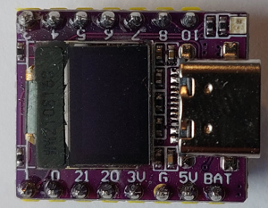uC
ESP32-C3
OLED
SSD1306 74 x 40 monochrome
neopixel
WS2812
This is a very small ESP32 board with a 72 x 40 I2C oled, a single neopixel, and two buttons for bootmode and reset.
The names in the table below are available as attributes.
Pin
Attribute name
2
neopixel_pin
6
i2c_scl_pin
5
i2c_sda_pin
9
bootmode_pin
- i2c() I2C¶
the (soft) I2C bus
- class board_01space_rp2040_042lcd¶
Bases:
object01space_rp2040_042lcd board
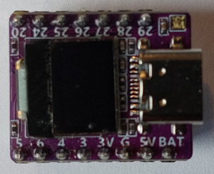uC
RP2040
OLED
SSD1306 74 x 40 monochrome
neopixel
WS2812
USB
C
This is a very small RP2040 board with a 72 x 40 I2C oled, a single neopixel, and two buttons for bootmode and reset. The names in the table below are available as attributes.
Pin
name
12
neopixel_pin
23
i2c_scl_pin
22
i2c_sda_pin
21
bootmode_pin
- display()¶
the oled display
- i2c()¶
the (soft) I2C bus
- neopixel()¶
the (single) neopixel
- class board_lilygo_ttgo_t_display¶
Bases:
objectlilygo_ttgo_t_display board
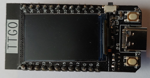uC
ESP32
OLED
ST7789 135 x 240 color
USB
C
This is an ESP32 board with a 135 x 240 SPI color LCD, and two input buttons beside the USB connector, and a reset button at the side of the board. The names in the table below are available as attributes.
Pin
name
35
button1_pin
0
button2_pin
18
spi_sclk
19
spi_mosi
5
tft_cs
16
tft_dc
23
tft_rst
4
tft_bl
- display()¶
the LCD (color driver)
- display_monochrome()¶
the LCD (monochrome driver)
- spi(baudrate=1000000, polarity=1, phase=1)¶
the (hard) SPI bus
- class board_lilygo_ttgo_t_dongle_s3¶
Bases:
objectlilygo_ttgo_t_dongle_s3 board
- missing image lilygo_ttgo_t_dongle_s3
uC
ESP32
OLED
ST7735 80 x 160 color
USB
A
This is an ESP32-S3 (dual RISC V) dongle with a 80 x 160 SPI color LCD, a reset button, a neopixel and an SD card slot (hidden inside the USB A connector). The names in the table below are available as attributes.
Pin
name
35
button1_pin
0
button2_pin
18
spi_sclk
19
spi_mosi
5
tft_cs
16
tft_dc
23
tft_rst
4
tft_bl
- display()¶
the LCD (color driver)
- display_monochrome()¶
the LCD (monochrome driver)
- spi(baudrate=1000000, polarity=1, phase=1)¶
the (hard) SPI bus
- class board_lilygo_ttgo_t_qt_v11¶
Bases:
objectlilygo_ttgo_t_qt_v11 watch
http://www.lilygo.cn/prod_view.aspx?TypeId=50054&Id=1314&FId=t3:50054:3
- missing image lilygo_ttgo_t_wristband
uC
ESP32-S3
LCD
GC9107 18 x 128 color
USB
C, CH340, boot / reset buttons
This is an wrist watch with an ESP32 with PSRAM, a small LiPo accu, a touch LCD, a vibration/buzzer motor, an accelerometer, i2s audio with a small speaker, and an RTC.
Pressing the button on the side for 5 seconds powers the watch down. When powered down, pressing it for 2 seconds restarts it. If this button can be read by the ESP32 I have not found out how.
The names in the table below are available as attributes.
Pin
name
18
i2c_sda (power and accelerometer)
19
i2c_scl (power and accelerometer)
35
power_int_pin
39
accelerometer_int_pin
18
tft_sclk
19
tft_mosi
5
tft_cs
27
tft_dc
12
tft_bl
23
touch_i2c_sda
32
touch_i2c_scl
38
touch_int
25
audio_i2s_ws
26
audio_i2s_bck
33
audio_i2s_dout
4
buzzer_pin
13
ir_pin
37
rtc_pin
- display(spi: Optional[SPI] = None) canvas¶
ST7789 240 x 240 color LCD
After a restart the LCD is disabled and the backlight is off. The display constructor enables the LCD and switches the backlight on.
- display_enable() None¶
enable power to the LCD
- display_spi(id: int = 1, baudrate=30000000, polarity=1, phase=1) SPI¶
default (hard) SPI bus for the LCD
- i2c() I2C¶
i2c bus for the power and accelerometer
This function returns the i2c bus for the AXP202 power management chip and the BMA423 accelerometer.
- touch(i2c: Optional[I2C] = None)¶
ft6236 touch chip
- touch_i2c(freq: int = 100000) I2C¶
touch chip i2c bus
- class board_lilygo_ttgo_t_watch_2020¶
Bases:
objectlilygo_ttgo_t_watch_2020 watch
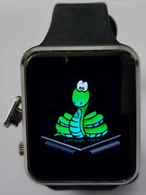uC
ESP32 with PSRAM
LCD
ST7789 240 x 240 color
Touch
FT6236
Power
AXP202
Audio
MAX98357A
Accelerometer
BMA423
Real Time Clock
PCF8563
USB
micro, CH9102, boot / reset circuit
This is an wrist watch with an ESP32 with PSRAM, a small LiPo accu, a touch LCD, a vibration/buzzer motor, an accelerometer, i2s audio with a small speaker, and an RTC.
Pressing the button on the side for 5 seconds powers the watch down. When powered down, pressing it for 2 seconds restarts it. If this button can be read by the ESP32 I have not found out how.
The names in the table below are available as attributes.
Pin
name
18
i2c_sda (power and accelerometer)
19
i2c_scl (power and accelerometer)
35
power_int_pin
39
accelerometer_int_pin
18
tft_sclk
19
tft_mosi
5
tft_cs
27
tft_dc
12
tft_bl
23
touch_i2c_sda
32
touch_i2c_scl
38
touch_int
25
audio_i2s_ws
26
audio_i2s_bck
33
audio_i2s_dout
4
buzzer_pin
13
ir_pin
37
rtc_pin
- display(spi: Optional[SPI] = None) canvas¶
ST7789 240 x 240 color LCD
After a restart the LCD is disabled and the backlight is off. The display constructor enables the LCD and switches the backlight on.
- display_enable() None¶
enable power to the LCD
- display_spi(id: int = 1, baudrate=30000000, polarity=1, phase=1) SPI¶
default (hard) SPI bus for the LCD
- i2c() I2C¶
i2c bus for the power and accelerometer
This function returns the i2c bus for the AXP202 power management chip and the BMA423 accelerometer.
- touch(i2c: Optional[I2C] = None)¶
ft6236 touch chip
- touch_i2c(freq: int = 100000) I2C¶
touch chip i2c bus
- class board_lilygo_ttgo_t_wristband¶
Bases:
objectlilygo_ttgo_t_wristband watch
http://www.lilygo.cn/prod_view.aspx?TypeId=50054&Id=1314&FId=t3:50054:3
- missing image lilygo_ttgo_t_wristband
uC
ESP32 with PSRAM
LCD
ST7789 240 x 240 color
Touch
FT6236
Power
AXP202
Audio
MAX98357A
Accelerometer
BMA423
Real Time Clock
PCF8563
USB
(on the breakout board:) C & micro, CH340, boot / reset buttons
This is an wrist watch with an ESP32 with PSRAM, a small LiPo accu, a touch LCD, a vibration/buzzer motor, an accelerometer, i2s audio with a small speaker, and an RTC.
Pressing the button on the side for 5 seconds powers the watch down. When powered down, pressing it for 2 seconds restarts it. If this button can be read by the ESP32 I have not found out how.
The names in the table below are available as attributes.
Pin
name
18
i2c_sda (power and accelerometer)
19
i2c_scl (power and accelerometer)
35
power_int_pin
39
accelerometer_int_pin
18
tft_sclk
19
tft_mosi
5
tft_cs
27
tft_dc
12
tft_bl
23
touch_i2c_sda
32
touch_i2c_scl
38
touch_int
25
audio_i2s_ws
26
audio_i2s_bck
33
audio_i2s_dout
4
buzzer_pin
13
ir_pin
37
rtc_pin
- display(spi: Optional[SPI] = None) canvas¶
ST7789 240 x 240 color LCD
After a restart the LCD is disabled and the backlight is off. The display constructor enables the LCD and switches the backlight on.
- display_enable() None¶
enable power to the LCD
- display_spi(id: int = 1, baudrate=30000000, polarity=1, phase=1) SPI¶
default (hard) SPI bus for the LCD
- i2c() I2C¶
i2c bus for the power and accelerometer
This function returns the i2c bus for the AXP202 power management chip and the BMA423 accelerometer.
- touch(i2c: Optional[I2C] = None)¶
ft6236 touch chip
- touch_i2c(freq: int = 100000) I2C¶
touch chip i2c bus
- class board_sunton_esp32_173s019¶
Bases:
objectsunton_sp32_173s019 board
missing image sunton_esp32_173s019_frontmissing image sunton_esp32_173s019_back [MicroPython image](https://micropython.org/download/GENERIC_S3_SPIRAM_OCT/)
uC
ESP32-S3 with SPIRAM (octal)
Image
ST7789 170 x 320 color
LCD
ST7789 170 x 320 color
USB
micro, CH340, boot & reset circuit, linear regulator
buttons
boot, reset
misc.
boot & reset buttons, SD card, connector, single-wire connector
This is an ESP32-S3 board with a color LCD simple charge circuit (with linear regulators), a speaker interface,
The names in the table below are available as attributes.
Pin
name
0
boot_mode_pin
12
lcd_sclk_pin
13
lcd_mosi_pin
11
lcd_rs_pin
10
lcd_cs_pin
1
lcd_reset_pin
14
lcd_backlight_pin
- boot_mode_pin = None¶
- display()¶
- lcd_backlight_pin = None¶
- lcd_cs_pin = None¶
- lcd_mosi_pin = None¶
- lcd_reset_pin = None¶
- lcd_rs_pin = None¶
- lcd_sclk_pin = None¶
- class board_sunton_esp32_2432s028¶
Bases:
objectsunton_sp32_2432s028 board
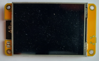 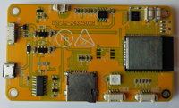uC
ESP32
LCD
ILI9341 240 * 430 color
touch
XPT2046 (resistive)
USB
micro, CH340, boot & reset circuit, linear regulator
LED
RGB leds
Sound
filter, SC8002B 3W aplifier, 2 pin connector
LDR
analog input
buttons
boot, reset
misc.
boot & reset buttons, SD card, connector, single-wire connector
This is an ESP32 board with a color LCD with touch, RGB leds, buttons for bootmode and reset, a LiPo connector and simple charge circuit (with linear regulators), a speaker interface,
PSRAM??
The names in the table below are available as attributes. Note that the touch chip, the LCD and the SD card use separate SPI busses.
Pin
name
4
red_led_pin
16
green_led_pin
17
blue_led_pin
26
speaker_pin
34
ldr_pin
14
tft_sclk_pin
13
tft_mosi_pin
12
tft_miso_pin
2
tft_rs_pin
15
tft_cs_pin
33
xpt2046_cs_pin
33
xpt2046_cs_pin
33
xpt2046_cs_pin
33
xpt2046_cs_pin
33
xpt2046_cs_pin
i2c_scl_pin
i2c_sda_pin
21
bootmode_pin
- display()¶
- display_monochrome()¶
- touch()¶
{kind=link}
{kind=link}
- class board_ttgo_txx_display¶
Bases:
objecthttps://www.waveshare.com/rp2040-lcd-0.96.htm
should use hard spi
- display()¶
- i2c()¶
- spi(baudrate=10000000, polarity=1, phase=1)¶
- bytes_from_int(value: int, n_bytes: int) bytes¶
bytes lsb-first representation of an int
- Parameters
value – int the value to be converted to bytes
n_bytes – int the desired number of bytes
- Result
bytes the bytes representation of the value
This function returns the int value as n_byte bytes, least significant byte first (little endian).
examples:
- class canvas(size: ~godafoss.xy, is_color: bool, background: [<class 'bool'>, <class 'godafoss.color'>])¶
Bases:
autoloadinggraphic drawing area, either monochrome or color
- Parameters
location –
xythe size of the canvas in pixels in x and y directionis_color – bool False for a monochrome canvas, True for a color canvas
A canvas is a rectanglular area of either monochrome or color pixels. A canvas has a size attribute, which is the number of pixels in the x and y directions. The top-left pixel is at xy( 0, 0 ), the bottom-right pixel is at xy(canvas.size.x - i, canvas.size.y - 1).
The is_color attribute is False for a monochrome canvas, or True for a color canvas.
The write_pixel method writes a single pixel.
The write method writes a
shape.Canvases can be added, which creates a canvas that writes to both constituent canvases.
- clear(ink: [bool | godafoss.color] = False) None¶
clear the display
- Parameters
ink – bool the ‘color’ to write to all pixels
This method clears the display. The default implementation writes False to all individual pixels. A concrete canvas might implement a faster method.
A display might be buffered: a clear() call might be effectuated only when the flush() method is called.
- flush(forced: bool = False) None¶
effectuate what was written to the canvas
- Parameters
forced – bool True forces a flush, even when no pixels were written
Writes to the canvas can be buffered. If so, a flush() method call is required to effectuate the write_pixel() calls.
A flush() call might be a no-op when no pixels were changed since the previous flush() call, unless the forced parameter is True.
- within(location: xy)¶
check if the location is within the canvas
- Parameters
location –
xythe location coordinates to be checked
This method returns True iff the location is within the canvas.
- write(thing: [godafoss.shape | str], location: xy = (0, 0), ink: [godafoss.color | None] = None)¶
write a
shapeor stringWhen the thing is a :class:`~godafoss.shape the write() method calls the write() method of the thing is called.
When the thing is a string, a
textis constructed from it and that is written.
- write_pixel(location: xy, ink: [godafoss.color | bool | None] = True) None¶
write a pixel
- Parameters
This method writes a single pixel. When the location is within the canvas, and the ink parameter is not None, the ink is written to the pixel.
If the ink argument is None, the pixel is not is written.
For a monochrome canvas, the ink must (if not None) be a bool. When True, the foreground ‘color’ is written. When False, the pixel is not written.
For a monochrome canvas, when the ink is a color, that color is written to the pixel. When the ink is a bool, the canvas foreground color is written. When False, the pixel is not written.
A canvas can be buffered, in which case the writing of pixels is be effectuated only when the flush() method is called.
- xy_swapped()¶
- canvas_demo_scrolling_text(s: ~godafoss.canvas, t: [<class 'str'>, <class 'godafoss.text'>], scroll_pause: int = 100, end_pause: int = 1000000, iterations=None)¶
- class canvas_dummy(size: xy, is_color: bool = True, background: [bool | godafoss.color] = (255, 255, 255), palet={(255, 255, 255): '.', (0, 0, 0): '*'})¶
Bases:
canvas- lines() [<class 'str'>]¶
- class canvas_native(size: xy, is_color: bool = True, background: [bool | godafoss.color] = (255, 255, 255), name='godafoss', scale=(1, 1))¶
Bases:
canvas- save(file_name: str)¶
- class circle(radius: int, fill=False)¶
Bases:
shapecircle shape
- Parameters
radius – (int) the radius of the circle
fill – (bool) whether the circle is outline (False, default) or filled (True)
Without any offset, a circle has its centre at the origin (xy(0,0), the top-left pixel of the sheet).
This class implements the
shapeinterface: it can be written to asheet, added to anothershapeto form a compound shape, or post-mathmultiplied (@ operator) with anxyvalue to include an offset.- write(sheet: sheet, offset: ~godafoss.xy = (0, 0), ink: [<class 'bool'>, <class 'godafoss.color'>] = True)¶
write the circle to the sheet
- Parameters
sheet – (
sheet) thesheeton which the shape must be writtenoffset – (
xy, default (0,0) ) the offset at which the shape must be written
Writing a
shapeis additive in the sense that pixels that are True are written in the sheets foreground ‘color’, while pixels that are False are not written.
- clamp(x: any, low: any, high: any) any¶
x, clamped to the nearest value in the range [low..high]
- Parameters
x – any the value to clamp within the range [low..high]
low – any the lower bound of the clamp interval
high – any the higher bound of the clamp interval
- Result
any either x, or the nearest value in the range [low..high]
This function returns max( low, min( x, high ) ).
examples:
clamp( 4, 1, 10 ) -> 4 clamp( 4, 6, 10 ) -> 6
- class color(red: int, green: int, blue: int)¶
Bases:
immutablergb color
- Parameters
red – int red channel brightness (0..255)
green – int green channel brightness (0..255)
blue – int blue channel brightness (0..255)
This is a (red, green, blue) color value.
The red, green and blue attributes are in the range 0…255. Values outside this range are clamped to the nearest value within the range. The rgb attribute is the tuple of the read, green and blue attributes.
The color channel values are additive (like light; not subtractive, like paint or filters).
Two colors can be added or subtracted.
Colors and be multiplied by an integer value, or divided by an integer value.
Some common colors are available as attributes of the colors class.
Values (objects) of this class are immutable.
examples:
color( 1, 2, 3 ).red -> 1 color( 1, 2, 3 ).green -> 2 color( 1, 2, 3 ).blue -> 3 color( 1, 2, 3 ).rgb() -> 1, 2, 3 color( -100, 100, 300 ).rgb() -> 0, 100, 255 color( 1, 2, 3 ) + color( 10, 20, 30 ) -> color( 11, 22, 33 ) color( 10, 20, 30 ) - color( 1, 2, 3 ) -> color( 9, 18, 27 ) 10 * color( 10, 20, 30 ) -> color( 100, 200, 255 ) color( 10, 11, 12 ) // 2 -> color( 5, 5, 6 ) str( color(1,2,3) ) -> "(1,2,3)"
- inverted() color¶
the complement of the color
A color can be negated, which yields the complimentary
color.examples:
color( 10, 11, 12 ).inverted() -> color( 245, 244, 243 ) - colors.white -> colors.black invert @ colors.cyan -> colors.red
- rgb()¶
return the 3 values read, green, blue
- class colors¶
Bases:
objectsome common color values
- black = (0,0,0)¶
- blue = (0,0,255)¶
- brown = (165,42,42)¶
- cyan = (0,255,255)¶
- gray = (128,128,128)¶
- green = (0,255,0)¶
- magenta = (255,0,255)¶
- pink = (255,200,203)¶
- purple = (128,0,128)¶
- red = (255,0,0)¶
- salmon = (250,128,114)¶
- sienna = (160,82,45)¶
- silver = (192,192,192)¶
- violet = (238,130,238)¶
- white = (255,255,255)¶
- yellow = (255,255,0)¶
- class dac¶
Bases:
objectan analog output pin
A write causes a dac to output the specified voltage. The value written is a fraction of the full scale output.
examples:
# set the dac to output 0V some_dac.write( fraction( 0, 100 ) ) # set the dac to output half of its maximum value some_dac.write( fraction( 10, 20 ) )
- inverted() dac¶
dac that outputs the negative (complement) of the written value
- Result
dacdac that, when written to, writes the complement of that value to the original dac
This function returns a dac that outputs the negative (complement) of the written value to the original dac.
examples:
# sets the dac to output the maximum some_dac.inverted().write( fraction( 0, 100 ) ) # set the dac to output 90% half of its maximum value (invert @ some_dac).write( fraction( 10, 100 ) )
- class digits(n: int, digit_order=None)¶
Bases:
objectseven-segments display
- Parameters
n – int the number of digits
digit_order – Iterable[ int ] | None the number of digits
This class abstracts a seven-segment display.
When the digit_order is not specified, it is range( n ).
When the digit_order is specified, it is the order in which the numerical digits are placed. When this digit_order skips some digits, those are not considered numeric digits, and they are not included in the p count, and are not used by the write() method. Such ‘digits’ can still be written by the write_digit_segments() method.
The n attribute is the number of digits. The p ttribute is the number of numeric digits. The segments attribute provides the translation from value to active segments. The LSB is segment a, the MSB - 1 is segment g.
- demo(*args, **kwargs)¶
seven-segment display demo
- flush(forced: bool = False) None¶
effectuate what was written to the display
- Parameters
forced – bool True forces a flush, even when no changes were made
Writes to the 7 segment display can be buffered. If so, a flush() method call is required to effectuate what was written.
A flush() call might be a no-op when nothing was written since the previous flush() call, unless the forced parameter is True.
- segments = {' ': 0, '-': 64, '0': 63, '1': 6, '2': 91, '3': 79, '4': 102, '5': 109, '6': 125, '7': 7, '8': 127, '9': 111, 'C': 97, 'H': 118, '_': 8, 'c': 88, 'h': 116, 'o': 92}¶
- write(s: str, points=(), align=True, ink: bool = True, flush: bool = True)¶
write a string to the display
This method writes the string s to the display. Valid characters that are the digits 0-9, the characters hHoCc-_ and the space. A point or comma enables the decimal point of the previous digit. Other characters are ignored.
The valid characters and their representation in segments are stored in the segments attribute. Characters can be added or changed if desired.
By default, the result will be written right-aligned: spaces (digits with no segments enabled) will be prepended to fill the number of digits in the display. When the align parameter is False, result will be written left-aligned (spaces will be appended instead of prepended).
The decimal points can also be enabled by the elements of the points parameter. Each element enables the decimal point of one digit in the result (after alignment).
By default, enabled segments will light up. When the ink parameter is False, this will be reversed: non-enabled segments will light up.
By default, the display will be updated (flush() call). When the flush parameter is False no flush() will be called, hence a flush() call might be needed to effectuate the write.
This method takes the digit_order (optional constructor parameter) into account. Digits that are not present in the digit_order are skipped.
- write_digit_segments(n: int, v: int)¶
write the segments of a single digit
- Parameters
n – int the digit that is written
v – int the seven-segment value
This method writes the 8-bit value v to the segments of digit n. The digit order (optional constructor parameter) is NOT taken into account by this method. The LSB is written to segment a, the MSB to the decimal point.
When n is outside the number of valid digits, the write_digit_segments() call has no effect.
A segments display can be buffered, so a flush() call might be required to effectuate what was written by write_digit_segments() calls.
- write_digits(values)¶
write the 8-bit values to the segments of the digits
- Parameters
values – Iterable[ int ] the values to write to the numeric digits
This method writes the 8-bit values to the digits of the display, starting at the leftmost one. The digit order (optional constructor parameter) is NOT taken into account by this method. Excess values (beyond the number of numerical digits in the display) are ignored.
- digits_demos(self, iterations=None)¶
seven-segment digits display demo
- dma_channel_get() int¶
- dma_channel_release(channel: int)¶
- edge()¶
- elapsed_us(f)¶
execute function f and return the elapsed time in microseconds
- class font(size: xy)¶
Bases:
objecta character font
- Parameters
size – (
xy) the size of a glyph
A character font defines a
glyph(monochrome image) for each character in the font. Each font has a fixed character height, equal to size.y. A proportional font has a size.x == 0. For a fixed width font size.x is the witdh of each character.
- class font_default¶
Bases:
autoloading,fontthe micropython built-in 8x8 font
- class fraction(value: int, maximum: int)¶
Bases:
immutablea fractional value
- Parameters
value – int the value, interpreted as a fraction of the maximum
maximum – int the value is interpreted on the scale [0..maximum]
A fraction is conceptually a value in the range 0.0 … 1.0. It is stored as a maximum (must be >0) and a value (will be 0 … maximum).
A fraction represents for instance the result of an ADC reading (like 512 out of 1023 for a 10-bit ADC for half the maximum voltage), or a setpoint for a servo (100 out of 400 would be 1/4 of full travel).
The value and maximum are available as attributes. The scaled method returns the fraction of the interval (minimum and maximum).
The inverse of a fraction inverse is the complement of its value.
A fraction can be converted to a string representation.
Values (objects) of this class are immutable.
examples:
.. py:method:: fraction.inverted() -> ~godafoss.fraction
- module
godafoss
complement of the fraction
The inverted (negative) of a fraction is its complement. For instance, the complement of 3-out-of-10 is 7-out-of-10.
examples:
- scaled(minimum: int | float, maximum: int | float) int | float¶
the fraction, scaled to an interval
- Parameters
minimum – int | float the real part (default 0.0)
maximum – int | float the imaginary part (default 0.0)
- Result
int | float the franctional value, scaled to the interval [minimum…maximum]
The scaled method is usefull to scale a fraction to an interval, which is specified by the minimum and maximum parameters. When those parameters are integers, the result will be an integer. When one or both are floats, the result is a float.
examples:
- class ft6236(i2c: I2C, size: Optional[xy] = None, address: int = 56)¶
Bases:
touchft6236 touch screen chip driver
- Parameters
i2c – machine.I2C i2c bus that connects to the chip, max 10 Mhz
size –
xythe size of the touch area in pixels
mux settling time 500 clocks??? rotate and mirror the screen offsets & calibration general touch class for this??
- class registers¶
Bases:
object- cipher = None¶
- ctrl = None¶
- dev_mode = None¶
- distance_left_right = None¶
- distance_up_down = None¶
- distance_zoom = None¶
- firmid = None¶
- focaltech_id = None¶
- g_mode = None¶
- gest_id = None¶
- group = None¶
- lib_ver_h = None¶
- lib_ver_l = None¶
- offset_left_right = None¶
- offset_up_down = None¶
- p1_hl = None¶
- p1_misc = None¶
- p1_weight = None¶
- p1_xh = None¶
- p1_xl = None¶
- p1_yh = None¶
- p2_hl = None¶
- p2_misc = None¶
- p2_weight = None¶
- p2_xh = None¶
- p2_xl = None¶
- p2_yh = None¶
- period_active = None¶
- period_monitor = None¶
- pwr_mode = None¶
- radian_value = None¶
- release_code_id = None¶
- state = None¶
- td_status = None¶
- th_diff = None¶
- time_enter_monitor = None¶
- touch_adcs()¶
read and return the raw x and y touch ADC values.
- Result
int, int tuple of the 12-bit x and y ADC values of the touch point None, None when no touch
- class ggf(file_name: str, cached: bool = True)¶
Bases:
shaperead a shape from a ggf file
- Param
file_name: str file that contains the image data in ggf format
- Param
cached: bool whether the file content is read into RAM at construction (default: False)
This is a shape object that is read from a ggf format file stored on the target. By default, the file content is read into RAM when the ggf object is constructed. When cached is False, the file data is read (but not permanently stored) when the ggf object is written to a canvas. This is slower, but saves RAM.
The Godafoss Graphic Format (ggf) is a very simple uncompressed graphic file format. The ggf.py script (in the make directory of the godafoss github) can be used to create ggf files from any graphic format readable by PIL.
ggf format
byte 0
identification
0xA6
byte 1
pixel format:
0: 1 bit/pixel MSB first
1: 1-byte RGB 3,3,2 R first
2: 3-byte RGB R first
bytes 2-3
x pixels size
high byte first
bytes 4-5
y pixels size
high byte first
bytes 6..
pixel data
by row; for B/W the last byte of each row is padded to a full byte
- class glcd(size: ~godafoss.xy, spi: ~machine.SPI, data_command: [<class 'int'>, <class 'godafoss.pin_out'>, <class 'godafoss.pin_in_out'>, <class 'godafoss.pin_oc'>], chip_select: [<class 'int'>, <class 'godafoss.pin_out'>, <class 'godafoss.pin_in_out'>, <class 'godafoss.pin_oc'>] = None, reset: [<class 'int'>, <class 'godafoss.pin_out'>, <class 'godafoss.pin_in_out'>, <class 'godafoss.pin_oc'>] = None, backlight: [<class 'int'>, <class 'godafoss.pin_out'>, <class 'godafoss.pin_in_out'>, <class 'godafoss.pin_oc'>] = None, power: [<class 'int'>, <class 'godafoss.pin_out'>, <class 'godafoss.pin_in_out'>, <class 'godafoss.pin_oc'>] = None, background: ~godafoss.color = (0,0,0), color_order: [<class 'str'>, None] = 'RGB', mechanism: int = 0, invert: bool = False, mirror_x: bool = False, mirror_y: bool = False, swap_xy: bool = False, offset=(0,0), x_deadband=0)¶
Bases:
canvas,lcd_spi,lcd_reset_backlight_powergeneric lcd driver for SPI color lcds
- Parameters
size –
xysize in pixels in x and y directionspi – machine.SPI SPI channel that connects to the driver chip
- :param data_command
data / command pin to the driver chip
- :param chip_select
SPI chip select pin to the driver chip (active low)
- :param reset
reset pin to the driver chip (optional, active low)
The constructor resets the driver chip. The lcd_reset_backlight_power:reset method can be used to reset the chip.
- :param backlight
backlight pin to the driver chip (optional, active high)
The constructor enables the backlight. The lcd_reset_backlight_power:backlight method can be used to switch the power.
- :param power
power enable pin to the driver chip (optional, active high)
The constructor enables power to the driver chip. The lcd_reset_backlight_power:power method can be used to switch the power.
- Parameters
background –
colordefault background color (default: colors.black)This is the default for the clear() method. The inverse of the background is the default for writing a monochrome shape.
offset –
xyoffset of the displayed areaLCD modules can have an margin of hidden pixels to the left and top of the displayed area. This parameter is the offset of the first displayed pixel (default: xy(0,0)).
invert – bool invert the luminosity of colors (default: False)
mirror_x – bool mirror (reverse) x adressing (default: False)
mirror_y – bool mirror (reverse) y adressing (default: False)
swap_xy – bool swap the x and y addressing (default: False)
color_order –
str | None color order
This parameter specifies order in which the colors must be stored in the chip to be displayed correctly on the LCD. The default is RGB, which is correct for most chips. For instancem, for a chip that swap the red and blue channels specify “BGR”.
In color mode, this driver uses a RAM canvas of 2 bytes per pixel, which can be more than your target has available. In monochrome mode (color_order = None) it uses a RAM canvas of 8 pixels per byte, but a downside is that flushing takes longer because data for the SPI transactions must be constructed on the fly.
mechanisms –
int the mechanism used for monochrome data transport
This parameter selects the mechanism used by the flush method to transport data to the LCD when the LCD is use in monochrome mode.
The default value of 0 uses a 4k lookup table. When this memory use is a problem, 1 can be specified. This setting uses a line buffer of 2 bytes per pixel in the x direction (256 bytes for 128 x 128 display) and calculates the data on the fly, which is much slower.
For a RP2040 chip setting 2 uses a PIO engine to generate the data. This is fast and requires no buffer, but uses a PIO engine, and can only display the colors black and white.
Raspberry Pi Pico RP2040 ST7735 color LCD 128 x 128
use
method
flush takes
color
n.a.
80 ms
monochrome
0
114 ms
monochrome
1
374 ms
monochrome
2
114 ms
This class is the base for various SPI color LCDs.
- class glyph(size: xy)¶
Bases:
shaperectangualar area of monochrome pixels, can be drawn to a
sheet- Parameters
size –
xythe size of a glyph
- read(location: xy) bool¶
the ‘color’ of the pixel at the location
- Parameters
location –
xythe location within the glyph for which the pixel is retrieved
- write(sheet: sheet, offset: xy = (0, 0), ink: bool | godafoss.color = True) None¶
write the glyph to the sheet
- class gpio_adc(pin_nr: int)¶
Bases:
adcanalog input pin of the target chip
- Parameters
pin_nr – int target chip pin number
This class abstracts an ADC (Analog to Digital Converter) input pin of the target chip.
For the inverted version, the read() method returns the complement of the value that would be retruned by the original adc.
- class gpio_in(pin_nr: int)¶
Bases:
pin_inchip GPIO pin used as input
- Parameters
pin_nr – (int) the chip pin number
- read() None¶
- class gpio_in_out(pin_nr: int)¶
Bases:
pin_in_outchip GPIO pin used as input
- Parameters
pin_nr – (int) the chip pin number
- direction_set_input() None¶
- direction_set_output() None¶
- read() None¶
- write(value: bool) None¶
set the pin value
- Parameters
value – (bool) the new pin value (level)
- class gpio_oc(pin_nr: int)¶
Bases:
pin_occhip GPIO pin used as input
- Parameters
pin_nr – (int) the chip pin number
- read() None¶
- class gpio_out(pin_nr: int)¶
Bases:
pin_outchip GPIO pin used as output
- Parameters
pin_nr – (int) the chip pin number
- write(value: bool) None¶
set the pin value
- Parameters
value – (bool) the new pin value (level)
- class hd44780(size, data: [<class 'godafoss.port_out'>, <class 'godafoss.port_in_out'>, <class 'godafoss.port_oc'>], rs: [<class 'int'>, <class 'godafoss.pin_out'>, <class 'godafoss.pin_in_out'>, <class 'godafoss.pin_oc'>], e: [<class 'int'>, <class 'godafoss.pin_out'>, <class 'godafoss.pin_in_out'>, <class 'godafoss.pin_oc'>], rw: [<class 'int'>, <class 'godafoss.pin_out'>, <class 'godafoss.pin_in_out'>, <class 'godafoss.pin_oc'>], backlight=None)¶
Bases:
terminalhd44780 character LCD interface
This class implements an interface to an hd44780 character LCD.

The hd44780 is the standard chip for interfacing small dot-character LCD interfaces. It can display the ASCII table characters, 8 characters (0..7) that can be user-defined as 5x7 pixels, and a an upper 128 characters (128…255) that vary with the chip variant, often Japanese characters.
The chip and its digital pins run at 5V. The contrast input can in most cases be connected to 0V (ground), but better use a 10k potentiometer between 0V and 5V. Some displays (mostly extended-temperature-range types) need the lower size of this potentiometer tied to a negative voltage, for instance -5V.
The digital interface to the chip has 8 data lines, but the chip can be configured to use only 4. This adds some complexity to the driver software and slows it down a little, but the saving of 4 micro-controller more than compensates for this, hence nearly all software (including this driver) for is for the 4-bit interface. Note for the 4-bit interface the 4 highest data pins (D4..D7) are used. The lower 4 can be left unconnected.
The chip has some locations that can be writen and also read back, but this offers little advantage, so most software (including this driver) only writes to the chip, thus saving another pin. Hence 6 digital pins (+ ground and 5V) are needed to interface to an hd44780 display: 4 data lines, the R/S line (selects between command and data), and the E line (a strobe for the command).

(Some larger displays use not one but two hd44780 chips. This driver is not compatible with such LCDs.)
Most hd44780 LCDs have a single row of connections, with the following pinout:

But as always, check the datasheet (in this case of the LCD) to be sure!
The hd44780 implements the ostream interface, but it doesn’t scroll: while the cursor is outside the visible characters (beyond the end of the line, or beyond the number of lines) any character writes will be ignored. Some characters are treated special:
‘n’ clears the rest of the line, and then moves to the first position of the next line
‘r’ puts the cursor at the start of the current line
‘c’ moves the cursor to the top-left position
The best way to get a flicker-free display is to overwite instead of clear-and-then-write: use ‘c’ to got to the ‘origin’, then rewrite the whole display, using ‘n’ to go to a next line (because it clears the remainder of the line).
- clear() None¶
clear the display and put the cursor at xy( 0, 0 )
- command(data: int) None¶
write a command to the hd44780
- data(data: int) None¶
write a data byte to the hd44780
- demo() None¶
- init()¶
initialize the hd44780 chip to 4-bit mode
- class hub75(size: xy, r1_b2: int, a_e: int, clk_lat_oe: int, frequency: int = 10000000, background: color = (0, 0, 0))¶
Bases:
canvasRP2040 HUB75 display driver
HUB75 is an interface and protocol for driving RGB LED panels. This driver uses RP2040 specific hardware (DMA and PIO), so it cabn be used only with that chip.
- Parameters
size – xy size of the display in x and y direction
r1_b2 –
int pin number of the r1 pin of the interface
The pins for r1, g1, b1, r2, g2, b2 are consecutive.
a_e –
int pin numbber of the a pin of the interface
The pins for a, b, c, d, e are cosecutive.
clk_lat_int –
int pin number of the clk pin of the interface
The clk, lat, int pins are consecutive.
frequency –
int interface frequency (default: 10_000_000)
The clock frequency (clk pin) used in the interface. The maximum seems to be 20 MHz.
background –
color background color (default: colors.black)
The (default) background color of the display.
A HUB75 panel has a two groups of three shift registers. Each group of three shift registers drives one row of RGB LEDs, one shift register per colour per LED color.. One group of shift registers drives LED rows in the upper half of the panel, the other group drives the lower half. Within each half of the panel, up to five selector input pins (A..E) determine which of the up to 32 LED rows is enabled. The shift registers each have a separate data input (R1, G1, B1, R2, G2, B2), and common clock (CLK), latch (LAT) and output-enable (OE) inputs.
A panel that uses all five selector pins is referred to as 1:32 multiplexed, because at each moment only one of the 32 row pairs (one in the upper part, one in the lower part) is enabled. The more common 1:16 multiplexed panels use four selector inputs (E is connected to ground).
A typical N x 16 panel omits the lower half of the panel, so the R2, G2, and B2 pins are not used. Such panels are still 1:16 multiplexed.
To maintain a steady image, the row pairs must be driven at a high enough rate to avoid flicker. This requires the controller to output data at a rate that is challenging for microcontrollers. For larger displays, panels are put in series, so the combined shift registers are concatenated. This drives the required data rate up even more, to a point where dedicated hardware or FPGAs must be used.
This driver uses the DMA (Direct Memory Access) and PIO (Programmable Input Output) peripherals of the RP2040 chip to driver a HUB75 display at a high enough data rate. (In fact, at the highest rate it can handle.)
The HUB75 interface uses 5V signal levels, but driving it with 3.3V RP2040 pins seems to be fine.
A typical monochrome panel uses a HUB12 connector, which is not compatible with HUB75.
A HUB75 panel (even a single one) can draw a lot of current: even a small 16x16 panel with all LEDs on theoretically draws 16A. Those displays have separate power connectors, and should be used with a suitable power supply.
A quirck of this driver is that it often doesn’t work when it is running, stopped, and - without a reset or Thonny STOP - is started again. It does however work each tine it is started after a reset or Thonny STOP.
I haven’t found an official description of the HUB75 interface and protocol. This [sparkfun article](https://www.sparkfun.com/news/2650) gives a good overview. This page describes the [binary code modulation](http://www.batsocks.co.uk/readme/art_bcm_1.htm) used by the driver to dim the LEDs.
- class ili9341(*args, **kwargs)¶
Bases:
lcd_base- class cmd¶
Bases:
object- CASET = None¶
- COLMOD = None¶
- DISPOFF = None¶
- DISPON = None¶
- GAMSET = None¶
- INVOFF = None¶
- INVON = None¶
- MADCTL = None¶
- NOP = None¶
- NORON = None¶
- PTLAR = None¶
- PTLON = None¶
- RAMRD = None¶
- RAMWR = None¶
- RASET = None¶
- RDDID = None¶
- RDDIM = None¶
- RDDMADCTL = None¶
- RDDPM = None¶
- RDDSDR = None¶
- RDDSEM = None¶
- RDDST = None¶
- SLPIN = None¶
- SLPOUT = None¶
- SWRESET = None¶
- TEOFF = None¶
- TEON = None¶
- VSCRDEF = None¶
- class image(size: xy)¶
Bases:
shapea rectangualar area of colored pixels
- draw_implementation(canvas: ~godafoss.canvas, offset: ~godafoss.xy, ink: [<class 'godafoss.color'>, <class 'bool'>])¶
- class immutable¶
Bases:
objectmake an object immutable
Python names are references, and class objects are mutable, so a class member variable can inadvertently be modified. The xy class is immutable, but if it were not, this would be possible:
origin = xy( 0, 0 ) a = origin a.x = 10 # this modifies the object that origin references! print( origin.x ) # prints 10
To prevent such modifications, a value class inherits from freeze, and calls immutable._init__( self ) when all its members have been initialized.
usage example:
- int_from_bytes(array: bytes | bytearray, signed: bool = False) int¶
int value from a lowest-byte-first sequence of bytes
- Parameters
array – bytes | bytearray the array of bytes that is to be converted to an integer
signed – bool treat the resulting bit pattern as unsigned (False, default) or signed (True)
- Result
int the array interpreted as integer value
This function returns the bytes as an unsigned integer value, the first byte as least significant byte of the int value.
Python has the int.from_bytes function, but it is currently not implemented fully and correctly in MicroPython. Hence this alternative.
examples:
- invert_bits(value: int, n_bits: int) int¶
the value, with its lowqer n_bits bits inverted
- Parameters
value – int the value to invert
n_bits – int the number of valid bits in the value
- Result
int the value, with its lower n_bits bits inverted
This function returns the value, of which n_bits are relevant, with those bits inverted. The higher bits in the returned value are 0 (clear).
examples:
- kitt(port, interval=50000, iterations=None) None¶
kitt display
Show the Kitt on the port with the specified interval for the specified number of iterations (defaults to infinite).
Times are in us (microseconds).
- class ks0107(data: [<class 'godafoss.port_out'>], cs1: [<class 'int'>, <class 'godafoss.pin_out'>, <class 'godafoss.pin_in_out'>, <class 'godafoss.pin_oc'>], cs2: [<class 'int'>, <class 'godafoss.pin_out'>, <class 'godafoss.pin_in_out'>, <class 'godafoss.pin_oc'>], cd: [<class 'int'>, <class 'godafoss.pin_out'>, <class 'godafoss.pin_in_out'>, <class 'godafoss.pin_oc'>], enable: [<class 'int'>, <class 'godafoss.pin_out'>, <class 'godafoss.pin_in_out'>, <class 'godafoss.pin_oc'>], size: ~godafoss.xy = (128,64), wr: [<class 'int'>, <class 'godafoss.pin_out'>, <class 'godafoss.pin_in_out'>, <class 'godafoss.pin_oc'>] = None, reset: [None, <class 'int'>, <class 'godafoss.pin_out'>, <class 'godafoss.pin_in_out'>, <class 'godafoss.pin_oc'>] = None, backlight: [None, <class 'int'>, <class 'godafoss.pin_out'>, <class 'godafoss.pin_in_out'>, <class 'godafoss.pin_oc'>] = None, power: [None, <class 'int'>, <class 'godafoss.pin_out'>, <class 'godafoss.pin_in_out'>, <class 'godafoss.pin_oc'>] = None, background: bool = False)¶
Bases:
canvas,lcd_reset_backlight_powerks0107 b/w lcd controller driver
This class inherits from
godafoss:lcd_reset_backlight_power, which provides functions to reset, switch the power, and switch the backlight (when the respective pins are available).- Parameters
size –
xyhorizontal and vertical size, in pixelsspi – machine.SPI spi bus (miso not used)
data_command – dc (data/command) pin of the chip
cs – cs (chip select) pin of the chip
reset – ( ) reset pin (optional), active low, high for normal operation
backlight – ( ) backlight pin (optional), active high
power – ( ) power pin (optional), active high
background – bool background ‘color’, default (False) is off (white-ish)
This is a driver for a pcd8544 black & white lcd controller. This chip was used with an 84 x 48 lcd in the once-popular Nokia model 5110 telephone, hence it is often called a (Nokia) 5110 lcd. This type of lcd is cheap and available from lots of sources, but the quality is often low (dead-on-arrival), and the pinout varies.
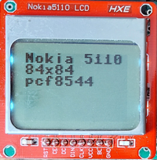The pcb module shown has a backlight pin that must be connected to the (3.3V) power via a suitable resistor (330 Ohm is OK).
This class inherits from
godafoss:lcd_reset_backlight_power, which provides functions to reset, switch the power, and switch the backlight (when the respective pins are available).This class implements the monochrome
canvasinterface, which provides functionality to write shapes (line,circle,rectangle,text), to derive modified canvases (inverted, mirrored, rotated, parts, combinations, etc.), and a comprehensive demo.- write_command(command)¶
- class lcd(chip: str, size: ~godafoss.xy, spi: ~machine.SPI, data_command: [<class 'int'>, <class 'godafoss.pin_out'>, <class 'godafoss.pin_in_out'>, <class 'godafoss.pin_oc'>], chip_select: [<class 'int'>, <class 'godafoss.pin_out'>, <class 'godafoss.pin_in_out'>, <class 'godafoss.pin_oc'>] = None, reset: [<class 'int'>, <class 'godafoss.pin_out'>, <class 'godafoss.pin_in_out'>, <class 'godafoss.pin_oc'>] = None, backlight: [<class 'int'>, <class 'godafoss.pin_out'>, <class 'godafoss.pin_in_out'>, <class 'godafoss.pin_oc'>] = None, power: [<class 'int'>, <class 'godafoss.pin_out'>, <class 'godafoss.pin_in_out'>, <class 'godafoss.pin_oc'>] = None, background: ~godafoss.color = (0,0,0), color_order: str | None = 'RGB', mechanism: int = 0, invert: bool = False, mirror_x: bool = False, mirror_y: bool = False, swap_xy: bool = False, offset=(0,0), x_deadband=0)¶
Bases:
canvas,lcd_spi,lcd_reset_backlight_powergeneric SPI color lcd driver
- Parameters
chip –
str driver chip name
Supported driver chips are st7567, st7735, st7789 and ili9341.
size –
xysize in pixels in x and y directionspi – machine.SPI SPI channel that connects to the driver chip
- :param data_command
data / command pin to the driver chip
- :param chip_select
SPI chip select pin to the driver chip (active low)
- :param reset
reset pin to the driver chip (optional, active low)
The constructor resets the driver chip. The lcd_reset_backlight_power:reset method can be used to reset the chip.
- :param backlight
backlight pin to the driver chip (optional, active high)
The constructor enables the backlight. The lcd_reset_backlight_power:backlight method can be used to switch the power.
- :param power
power enable pin to the driver chip (optional, active high)
The constructor enables power to the driver chip. The lcd_reset_backlight_power:power method can be used to switch the power.
- Parameters
background –
colordefault background color (default: colors.black)This is the default for the clear() method. The inverse of the background is the default for writing a monochrome shape.
invert – bool invert the luminosity of colors (default: False)
mirror_x – bool mirror (reverse) x adressing (default: False)
mirror_y – bool mirror (reverse) y adressing (default: False)
swap_xy – bool swap the x and y addressing (default: False)
color_order –
str | None color order
This parameter specifies order in which the colors must be stored in the chip to be displayed correctly on the LCD. The default is RGB, which is correct for most chips. For instancem, for a chip that swap the red and blue channels specify “BGR”.
In color mode, this driver uses a RAM canvas of 2 bytes per pixel, which can be more than your target has available. In monochrome mode (color_order = None) it uses a RAM canvas of 8 pixels per byte, but a downside is that flushing takes longer because data for the SPI transactions must be constructed on the fly.
mechanisms –
int the mechanism used for monochrome data transport
This parameter selects the mechanism used by the flush method to transport data to the LCD when the LCD is use in monochrome mode.
The default value of 0 uses a 4k lookup table. When this memory use is a problem, 1 can be specified. This setting uses a line buffer of 2 bytes per pixel in the x direction (256 bytes for 128 x 128 display) and calculates the data on the fly, which is much slower.
For a RP2040 chip setting 2 uses a PIO engine to generate the data. This is fast and requires no buffer, but uses a PIO engine, and can only display the colors black and white.
Raspberry Pi Pico RP2040 ST7735 color LCD 128 x 128
use
method
flush takes
color
n.a.
80 ms
monochrome
0
114 ms
monochrome
1
374 ms
monochrome
2
114 ms
offset –
xyoffset of the displayed areaLCD modules can have a margin of hidden pixels to the left and top of the displayed area. This parameter is the offset of the first displayed pixel (default: xy(0,0)).
This class is a front-end for the drivers for various SPI color LCDs.
- make_fsm()¶
- pio_put = None¶
- class lcd_base(size: ~godafoss.xy, spi: ~machine.SPI, data_command: [<class 'int'>, <class 'godafoss.pin_out'>, <class 'godafoss.pin_in_out'>, <class 'godafoss.pin_oc'>], chip_select: [<class 'int'>, <class 'godafoss.pin_out'>, <class 'godafoss.pin_in_out'>, <class 'godafoss.pin_oc'>] = None, reset: [<class 'int'>, <class 'godafoss.pin_out'>, <class 'godafoss.pin_in_out'>, <class 'godafoss.pin_oc'>] = None, backlight: [<class 'int'>, <class 'godafoss.pin_out'>, <class 'godafoss.pin_in_out'>, <class 'godafoss.pin_oc'>] = None, power: [<class 'int'>, <class 'godafoss.pin_out'>, <class 'godafoss.pin_in_out'>, <class 'godafoss.pin_oc'>] = None, background: ~godafoss.color = (0,0,0), color_order: [<class 'str'>, None] = 'RGB', mechanism: int = 0, invert: bool = False, mirror_x: bool = False, mirror_y: bool = False, swap_xy: bool = False, offset=(0,0), x_deadband=0)¶
Bases:
canvas,lcd_spi,lcd_reset_backlight_powergeneric SPI color lcd driver
- Parameters
chip –
str driver chip name
Supported driver chips are st7567, st7735, st7789 and ili9341.
size –
xysize in pixels in x and y directionspi – machine.SPI SPI channel that connects to the driver chip
- :param data_command
data / command pin to the driver chip
- :param chip_select
SPI chip select pin to the driver chip (active low)
- :param reset
reset pin to the driver chip (optional, active low)
The constructor resets the driver chip. The lcd_reset_backlight_power:reset method can be used to reset the chip.
- :param backlight
backlight pin to the driver chip (optional, active high)
The constructor enables the backlight. The lcd_reset_backlight_power:backlight method can be used to switch the power.
- :param power
power enable pin to the driver chip (optional, active high)
The constructor enables power to the driver chip. The lcd_reset_backlight_power:power method can be used to switch the power.
- Parameters
background –
colordefault background color (default: colors.black)This is the default for the clear() method. The inverse of the background is the default for writing a monochrome shape.
invert – bool invert the luminosity of colors (default: False)
mirror_x – bool mirror (reverse) x adressing (default: False)
mirror_y – bool mirror (reverse) y adressing (default: False)
swap_xy – bool swap the x and y addressing (default: False)
color_order –
str | None color order
This parameter specifies order in which the colors must be stored in the chip to be displayed correctly on the LCD. The default is RGB, which is correct for most chips. For instancem, for a chip that swap the red and blue channels specify “BGR”.
In color mode, this driver uses a RAM canvas of 2 bytes per pixel, which can be more than your target has available. In monochrome mode (color_order = None) it uses a RAM canvas of 8 pixels per byte, but a downside is that flushing takes longer because data for the SPI transactions must be constructed on the fly.
mechanisms –
int the mechanism used for monochrome data transport
This parameter selects the mechanism used by the flush method to transport data to the LCD when the LCD is use in monochrome mode.
The default value of 0 uses a 4k lookup table. When this memory use is a problem, 1 can be specified. This setting uses a line buffer of 2 bytes per pixel in the x direction (256 bytes for 128 x 128 display) and calculates the data on the fly, which is much slower.
For a RP2040 chip setting 2 uses a PIO engine to generate the data. This is fast and requires no buffer, but uses a PIO engine, and can only display the colors black and white.
Raspberry Pi Pico RP2040 ST7735 color LCD 128 x 128
use
method
flush takes
color
n.a.
80 ms
monochrome
0
114 ms
monochrome
1
374 ms
monochrome
2
114 ms
offset –
xyoffset of the displayed areaLCD modules can have an margin of hidden pixels to the left and top of the displayed area. This parameter is the offset of the first displayed pixel (default: xy(0,0)).
This class is a front-end for the drivers for various SPI color LCDs.
- make_fsm()¶
- pio_put = None¶
- class lcd_driver_st7735(master: glcd)¶
Bases:
object- class cmd¶
Bases:
object- CASET = None¶
- COLMOD = None¶
- DISPOFF = None¶
- DISPON = None¶
- FRMCTR1 = None¶
- FRMCTR2 = None¶
- FRMCTR3 = None¶
- GMCTRN1 = None¶
- GMCTRP1 = None¶
- INVCTR = None¶
- INVOFF = None¶
- INVON = None¶
- MADCTL = None¶
- NOP = None¶
- NORON = None¶
- PTLAR = None¶
- PWCTR1 = None¶
- PWCTR2 = None¶
- PWCTR3 = None¶
- PWCTR4 = None¶
- PWCTR5 = None¶
- RAMRD = None¶
- RAMWR = None¶
- RASET = None¶
- RDDID = None¶
- RDDST = None¶
- RDID1 = None¶
- RDID2 = None¶
- RDID3 = None¶
- RDID4 = None¶
- SLPIN = None¶
- SLPOUT = None¶
- SWRESET = None¶
- VMCTR1 = None¶
- class lcd_reset_backlight_power(reset: [None, <class 'int'>, <class 'godafoss.pin_out'>, <class 'godafoss.pin_in_out'>, <class 'godafoss.pin_oc'>], backlight: [None, <class 'int'>, <class 'godafoss.pin_out'>, <class 'godafoss.pin_in_out'>, <class 'godafoss.pin_oc'>], power: [None, <class 'int'>, <class 'godafoss.pin_out'>, <class 'godafoss.pin_in_out'>, <class 'godafoss.pin_oc'>], reset_duration: int = 1000, reset_wait: int = 1000)¶
Bases:
objectlcd common functionality
- Parameters
rst – (None, int, pin_out, pin_in_out, pin_oc) reset pin; active low; high for normal operation
bl – (None, int, pin_out, pin_in_out, pin_oc) backlight pin; active high
power – (None, int, pin_out, pin_in_out, pin_oc) power pin, active high
reset_duration – (int) width of a reset pulse, in microseconds (default 1)
reset_wait – (int) wait time after a reset, in microseconds (default 1)
This class provides the basic functions for a typical LCD of having reset, backlight and power pins. All pins are optional, and active high. . The constructor enables power and backlight, and resets the lcd.
- backlight(state: bool) None¶
turn the backlight on (True) or off (False)
- backlight_blink(high_time=500000, low_time=None, iterations: None = None)¶
- power(state: bool) None¶
turn the power on (True) or off (False)
- reset() None¶
hard-reset the display.
- class lcd_spi(spi: ~machine.SPI, data_command: [<class 'int'>, <class 'godafoss.pin_out'>, <class 'godafoss.pin_in_out'>, <class 'godafoss.pin_oc'>], chip_select: [<class 'int'>, <class 'godafoss.pin_out'>, <class 'godafoss.pin_in_out'>, <class 'godafoss.pin_oc'>])¶
Bases:
objectspi lcd command / data
- Parameters
spi – (machine.SPI) spi interface (miso not used)
data_command – ( ) data / command pin, high for data, low for command
chip_select – ( ) chip select pin, active low
This class provides the basic command & data interface for a spi LCD with a command / data pin.
- write_command(command: [<class 'int'>, [<class 'int'>]] = None, data=None, buffer=None) None¶
write command and/or data
- Parameters
command – (None, int) a command byte to be send to the lcd
data – (None, sequence of bytes) data bytes to be send to the lcd
This method writes a command (integer, optional) and data (also optional) to the lcd. The data must be acceptabel for a bytes() call.
- less(x, n=1)¶
- class line(span: xy)¶
Bases:
shapeline shape
- Parameters
span – (
godafoss.xy) the far end of the line, as offset from the start
Without any offset, a line starts at the origin (xy(0,0), the top-left pixel of the sheet).
This class implements the
shapeinterface: it can be written to asheet, added to anothershapeto form a compound shape, or post-mathmultiplied (@ operator) with anxyvalue to include an offset.- write(s: sheet, offset: ~godafoss.xy = (0, 0), ink: [<class 'bool'>, <class 'godafoss.color'>] = True)¶
write the line to the sheet
- Parameters
sheet – (
sheet) thesheeton which the shape must be writtenoffset – (
xy, default (0,0) ) the offset at which the shape must be written
Writing a
shapeis additive in the sense that pixels that are True are written in the sheets foreground ‘color’, while pixels that are False are not written.
- make_pin_in_out(pin) pin_in_out¶
make a pin_out
This function returns a pin_out if one can be made from its parameter, which can be a pin number, a pin_out, a pin_in_out, or a pin_oc.
When the parameter is a pin_oc, the returned pin_out won’t drive its physical pin high: a suitable pull-up must be provided to do that.
- make_pin_oc(pin) pin_oc¶
make a pin_out
This function returns a pin_out if one can be made from its parameter, which can be a pin number, a pin_out, a pin_in_out, or a pin_oc.
When the parameter is a pin_oc, the returned pin_out won’t drive its physical pin high: a suitable pull-up must be provided to do that.
- make_pin_out(pin) pin_out¶
make a pin_out
This function returns a pin_out if one can be made from its parameter, which can be a pin number, a pin_out, a pin_in_out, or a pin_oc.
When the parameter is a pin_oc, the returned pin_out won’t drive its physical pin high: a suitable pull-up must be provided to do that.
- class make_port_in(*args)¶
Bases:
port_indigital output port from pins
A port_out is constructed from a number of pins that are outputs or can function as outputs.
- read() int¶
- class make_port_in_out(*args)¶
Bases:
port_in_outdigital output port from pins
A port_out is constructed from a number of pins that are outputs or can function as outputs.
- directions_set(directions: int) None¶
- read() int¶
- write(values: int) None¶
- class make_port_oc(*args)¶
Bases:
port_ocdigital output port from pins
A port_out is constructed from a number of pins that are outputs or can function as outputs.
- read() int¶
- write(values: int) None¶
- class make_port_out(*args)¶
Bases:
port_outdigital output port from pins
A port_out is constructed from a number of pins that are outputs or can function as outputs.
- write(values: int) None¶
- make_tuple(*args: any) any¶
make a tuple from a tuple or list, or from a number of arguments
- Parameters
*args – any the arguments are to be turned into a tuple
- Result
any a tuple constructed from the *args
When called with one argument, which is a list or a tuple, this function returns it as a tuple. Otherwise, it returns a tuple of its argument(s).
examples:
make_tuple( 1, 2, 3 ) -> ( 1, 2, 3 ) make_tuple( ( 1, 2 ), 3 ) -> ( ( 1, 2 ), 3 ) make_tuple( ( 1, 2 ) ) -> ( 1, 2 ) make_tuple( [ 1, 2 ] ) -> ( 1, 2 )
- class max7219(n, spi, chip_select: [<class 'int'>, <class 'godafoss.pin_out'>, <class 'godafoss.pin_in_out'>, <class 'godafoss.pin_oc'>], background=False, brightness=0, enable=True)¶
Bases:
canvasmax7219 LED matrix driver
The max7219 is a LED matrix driver that is commonly used to drive either an 8x8 LED matrix, or up to 8 7-segment LED displays. Max7219 chips can be chained to drive a larger LED matrix.
The
- brightness(v)¶
- enable(v)¶
- write_command(command, data) None¶
- class mcp23017(bus, address=0)¶
Bases:
_port_in_out_buffer- directions_flush()¶
write directions buffer to chip
- flush()¶
write buffer to chip
- refresh()¶
read buffer from chip
- mirror_bits(value: int, n_bits: int) int¶
the value, with its lower n_bit bits mirrored
- Parameters
value – int the value to mirror
n_bits – int the number of valid bits in the value
- Result
int the value, with its lower n_bits bits mirrored
This function returns the value, of which n_bits are relevant, with the bits mirrored (most significant bit becomse the least signififacnt bit and vice verse, etc.) The higher bits in the returned value are 0 (clear).
examples:
- moving_text(s: ~godafoss.canvas, t: [<class 'str'>, <class 'godafoss.text'>], pixel_pause: int = 1000, text_pause: int = 1000000, iterations=None) None¶
- class mrfc522(spi, cs: [<class 'int'>, <class 'godafoss.pin_out'>, <class 'godafoss.pin_in_out'>, <class 'godafoss.pin_oc'>], rst: [<class 'int'>, <class 'godafoss.pin_out'>, <class 'godafoss.pin_in_out'>, <class 'godafoss.pin_oc'>])¶
Bases:
objectHello
- antenna_on(on=True)¶
hello
- anticoll()¶
hello
- auth(mode, addr, sect, ser)¶
hello
- demo()¶
hello
- read(addr)¶
hello
- read_uid()¶
- register_read(reg)¶
hello
- register_write(reg, val)¶
hello
- request(mode)¶
hello
- reset()¶
- select_tag(ser)¶
hello
- stop_crypto1()¶
hello
- write(addr, data)¶
hello
- class neopixels(n: int, background, order: str = 'RGB')¶
Bases:
canvasneopixels common driver
- Parameters
n – (int) the number of pixels in the chain
background – (
color) the background color (default: black)order – (str) the color order (default: RGB)
Neopixels are seperately controllable RGB LEDs, either as separate chip and LED, or as chip combined with an RGB LED. Neopixels can be connected into a chain, where only the first pixel is connected to a microcontroller. Power and data (and for some types a clock) are fed from each neopixel to the next. Such chains are often used in strips, and sometimes as rectanges (where the chain is folded).
The common chip are summarized in the table below. The apa102 and ws2801 chips have dedicated driver classes. The hd107 seems to use the same protocol as the apa102, so it should work with that driver. The ws2811, ws2812, ws2813 and ws2815 chips can use the ws281x driver class.
chip
form
interface
power
protocol
apa102
chip
data, clock
5V
start, data, end
hd107
led
data, clock
5V
start, data, end
ws2801
chip
data, clock
5V
data only
ws2811
chip
data
5V
data only
ws2812
led
data
5V
data only
ws2813
led
data
5V
data only
ws2815
led
data
12V
data only
Be aware that a chain of neopixels can draw a significant amount of current: at for brightness 60mA per pixel. Hence for non-trivial amounts of neopixels a separate power supply is required, and power + ground ‘bypass’ wiring might be needed.
- demo_color_wheel(color_list=((255, 0, 0), (0, 255, 0), (0, 0, 255), (255, 255, 255)), delay: int = 10000, iterations=None, dim: int = 30)¶
- one(name: str) _one¶
- class pcd8544(size: ~godafoss.xy, spi: ~machine.SPI, data_command: [<class 'int'>, <class 'godafoss.pin_out'>, <class 'godafoss.pin_in_out'>, <class 'godafoss.pin_oc'>], chip_select: [<class 'int'>, <class 'godafoss.pin_out'>, <class 'godafoss.pin_in_out'>, <class 'godafoss.pin_oc'>], reset: [None, <class 'int'>, <class 'godafoss.pin_out'>, <class 'godafoss.pin_in_out'>, <class 'godafoss.pin_oc'>] = None, backlight: [None, <class 'int'>, <class 'godafoss.pin_out'>, <class 'godafoss.pin_in_out'>, <class 'godafoss.pin_oc'>] = None, power: [None, <class 'int'>, <class 'godafoss.pin_out'>, <class 'godafoss.pin_in_out'>, <class 'godafoss.pin_oc'>] = None, background: bool = False)¶
Bases:
canvas,lcd_reset_backlight_power,lcd_spipcd8544 SPI b/w lcd controller driver
This class inherits from
godafoss:lcd_reset_backlight_power, which provides functions to reset, switch the power, and switch the backlight (when the respective pins are available).- Parameters
size –
xyhorizontal and vertical size, in pixelsspi – machine.SPI spi bus (miso not used)
data_command – dc (data/command) pin of the chip
cs – cs (chip select) pin of the chip
reset – ( ) reset pin (optional), active low, high for normal operation
backlight – ( ) backlight pin (optional), active high
power – ( ) power pin (optional), active high
background – bool background ‘color’, default (False) is off (white-ish)
This is a driver for a pcd8544 black & white lcd controller. This chip was used with an 84 x 48 lcd in the once-popular Nokia model 5110 telephone, hence it is often called a (Nokia) 5110 lcd. This type of lcd is cheap and available from lots of sources, but the quality is often low (dead-on-arrival), and the pinout varies.
The pcb module shown has a backlight pin that must be connected to the (3.3V) power via a suitable resistor (330 Ohm is OK).
This class inherits from
godafoss:lcd_reset_backlight_power, which provides functions to reset, switch the power, and switch the backlight (when the respective pins are available).This class implements the monochrome
canvasinterface, which provides functionality to write shapes (line,circle,rectangle,text), to derive modified canvases (inverted, mirrored, rotated, parts, combinations, etc.), and a comprehensive demo.
- class pcf8574(bus, address=0)¶
Bases:
_pcf8574x
- class pcf8574a(bus, address=0)¶
Bases:
_pcf8574x
- class pcf8575(bus, address=32)¶
Bases:
_port_oc_bufferpcf8575 I2C I/O extender
This class implements an interface to a pcf8575 I2C I/O extender chip.

A pcf8575 is an I2C slave that provides 8 open-collector input/output pins with weak pull-ups. The power supply range is 2.5 .. 5.5 Volt.

The chip has a 7-bit slave address. 3 bits are set by the level of 3 input pins (a0 .. a2) of the chip. With all address poins pulled low the i2c address is 0x20.

The chip has only one register, which can be read and written. When written, it determines the level of the 8 output pins: low when the bit is 0, pulled weakly high when the bit is 1. When read, the level of the 8 pins determines the value: 0 for a low pin, 1 for a high pin.

The next code shows a kitt display on 8 LEDs connected to the pcf8574 output pins. Because the output pins are open-collector, the LEDs are connected to power (instead of to the ground), hence the use of hwlib::port_out_invert().
- flush()¶
write buffer to chip
- refresh()¶
read buffer from chip
- class pin_dummy¶
Bases:
pin_in_outa dummy in-out pin
This dummy pin just sets the is_output and value properties, or returns the value property.
- direction_set_input() None¶
- direction_set_output() None¶
- read() bool¶
- write(value: bool | int) None¶
- class pin_in¶
Bases:
autoloadingdigital input pin
A pin_in is a digital input pin: an object from which you can read() a bool value.
A pin can be negated (minus operator or inverted() function) to create a pin that will read the inverted level relative to the original pin.
The as_pin_in() function returns the pin itself.
The demo() function reads and prints the pin value.
- class pin_in_out¶
Bases:
autoloadingdigital input output pin
A pin_in_out is a digital input output pin.
The direction can be set to input or output by the direction_set_input() and direction_set_output() functions.
When the direction is output, the pin level can be written.
When the direction is input, the pin level can be read.
A pin can be inverted (minus operator or inverted() function) to create a pin that will read and write the inverted level.
Input output pins can be added together or to a port_in_out to create a (larger) port_in_out.
The as_pin_in_out() function returns the pin itself.
The as_pin_in() function returns the input-only version of the pin.
The as_pin_out() function returns the output-only version of the pin.
The as_pin_oc() function returns the open-collector version of the pin.
- as_pin_in_out() pin_in_out¶
- class pin_oc¶
Bases:
autoloadingopen-collector input output pin
A pin_oc is an open-collector (or more likely, open-drain) digital input output pin.
The pin level can be written. When a 0 is written, the pin hardware will pull the output level low. When a 1 is written, the pin hardware will let the pin level float.
The pin level can be read. When a 0 has been written to the pin, a 0 will be read unless there is some serious hardware trouble. When a 1 has been written, the level on the pin will be read.
A pin can be negated to create a pin that will read and write the inverted level.
The as_pin_in function returns the input-only version of the pin.
The as_pin_out function returns the output-only version of the pin.
The as_pin_in_out function returns the input-output version of the pin. Note that is a pseudo input-output: writing a zero to it will pull the output low, but writing a one to it will float the output (not pull it high, as a read input-output pin would).
The as_pin_oc function returns the pin itself.
Open collector pins can be added together or to a port_oc to create a (larger) port_oc.
- class pin_out¶
Bases:
autoloadingdigital output pin
A pin_out is a digital output pin: an object to which you can write() a digital level.
A pin can be inverted (minus operator or invert() function) to create a pin that will write the inverted level.
Output pins can be added together or to a port_out to create a (larger) port_out.
The as_output() function returns the pin itself.
The demo() of an output calls the global demo() function.
- class port_buffer(nr_of_pins: int)¶
Bases:
port_in_out- directions_set(directions: int) None¶
- read() int¶
- write(values: int) None¶
- class port_in(number_of_pins: int)¶
Bases:
autoloading.
- class port_in_out(number_of_pins: int)¶
Bases:
autoloadingdigital input output port
A port_in_out is constructed from a number of pins that are input//outputs or can function as input//outputs.
A port_in_out can be read or written as a whole, subject to the relevant pins being set to the correct direction: call direction_set_input() to prepare all pins for a read, call direction_set_output() to prepre all pins for a write.
Individual pins cna be prepared for read or write by passing their number within the port to direction_set_input() or direction set_output(). The pin value read for a pin that is output is not defined. A pin value written to a pin that is input might or might not have an effect once the pin is set to output.
- as_port_in_out() port_in_out¶
- direction_set_input() None¶
- direction_set_output() None¶
- class port_oc(number_of_pins: int)¶
Bases:
autoloading
- class port_out(number_of_pins: int)¶
Bases:
autoloadingdigital input output port
A port_in_out is constructed from a number of pins that are input//outputs or can function as input//outputs.
A port_in_out can be read or written as a whole, subject to the relevant pins being set to the correct direction: call direction_set_input() to prepare all pins for a read, call direction_set_output() to prepre all pins for a write.
Individual pins cna be prepared for read or write by passing their number within the port to direction_set_input() or direction set_output(). The pin value read for a pin that is output is not defined. A pin value written to a pin that is input might or might not have an effect once the pin is set to output.
- print_info()¶
print the target name and some memory information
This function is meant to give a quick impression of your target system.
You can cut-n-paste the function body to use it without Godafoss.
- pulse(pin, high_time: int, low_time: int = 0) None¶
high pulse on the pin
The pin is used to make a pin_out.
Make the pin high, wait for high_time (must be provided), make the pin low, and wait for low_time (defaults to zero).
Times are in us (microseconds).
- randint(a, b)¶
Return random integer in range [a, b], including both end points.
- class rectangle(span: xy, fill=False)¶
Bases:
shaperectangle shape
- Parameters
span – (
godafoss.xy) the far end of the rectangle, as offset from the start
Without any offset, a rectangle starts at the origin (xy(0,0), the top-left pixel of the sheet).
This class implements the
shapeinterface: it can be written to asheet, added to anothershapeto form a compound shape, or post-mathmultiplied (@ operator) with anxyvalue to include an offset.- write(s: sheet, offset: ~godafoss.xy = (0, 0), ink: [<class 'bool'>, <class 'godafoss.color'>] = True)¶
write the line to the sheet
- Parameters
sheet – (
sheet) thesheeton which the shape must be writtenoffset – (
xy, default (0,0) ) the offset at which the shape must be written
Writing a
shapeis additive in the sense that pixels that are True are written in the sheets foreground ‘color’, while pixels that are False are not written.
- class repeater(iterations: int | None)¶
Bases:
objectiterate the indicated number of iterations, or forever when None
- Parameters
iterations – int | None the number of iterations, or None for infinite iterationfs
This iterator is usefull for iterative demos that by default must run forever, but might be used to run a fixed numer of times.
examples:
for _ in repeater( 10 ): ... # ... is repeated 10 times for _ in repeater( None ): ... # ... is repeated forever
- report(f, *args, **kwargs)¶
decorator for benchmarking
This function decorator will report the time spent (in microseconds) and memory claimed (in bytes) each time the decorated function runs.
- class servo(pin: [<class 'int'>, <class 'godafoss.pin_out'>, <class 'godafoss.pin_in_out'>, <class 'godafoss.pin_oc'>], minimum: int = 1000, maximum: int = 2000, interval: int = 20000)¶
Bases:
objectdrive a hobby servo
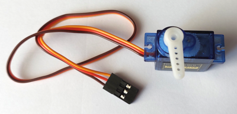This class drives a hobby servo. A hobby servo requires pulses with a width of 1.0 … 2.0 ms (exact range might vary by servo) each 20 ms (this interval is not very critical).
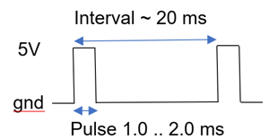These pulse will cause the servo to turn its axle and horn to a specific angle. Typically, the angle varies between 0 and 180 degrees for pulses of 1.0 .. 2.0 ms.
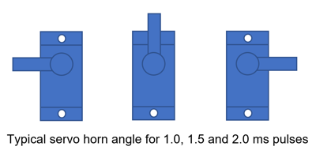Provided that it is called often enough (either write() or poll()) a servo object will provide a pulse of the appropriate width on the pin. The pulse will be delivered by the write() or poll() function call, so that call can take up to the maximum pulse length.
A hobby servo needs a 5V supply, from which it can draw a significant current. One small (SG90, as shown in the picture) servo can safely be powered from a USB port. For more and/or larger servos, a separate 5V power suply is advisable.
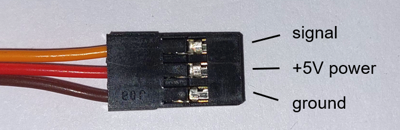A hobby servo expects a 5V pulse, but in practice a 3.3V GPIO pin works fine. If the micro-controller seems to work unreliable when driving a servo, adding a large decoupling capacitor on the 5V power supply (1000uF) can help.
- demo(steps=100, iterations=None) None¶
servo demo
- poll() None¶
output servo pulse when it is time to do so
Write a pulse to the servo (corresponding to the last fraction written) if it is time to do so. The default (bit banged) implementation requires poll() to be called regularly. An implementation that uses hardware probbaly doesn’t need poll() calls.
- class shape¶
Bases:
objectsomething that can be drawn on a canvas
A shape is something that can be drawn on a
canvas. Examples are aline,rectangle,circle, andglyph(character).Shapes can be grouped together by adding them together (+ operator). The result is a
shapethat, when written, writes all its constituent shapes.A shape can be pre-multiplied by an xy value, which adds an offset to where the shape is written.
- sign(x)¶
- sleep_us(t: int) None¶
- class slf3s_1300f(i2c: I2C, address: int = 8)¶
Bases:
objectsensirion slf3s_1300f flow sensor
can nack (ENODEV) when polled to fast (500us pause)
- class commands¶
Bases:
objectchip commands
- measure_thermal_conductivity = None¶
- read_id_and_serial_1 = None¶
- read_id_and_serial_2 = None¶
- start_measuring_isopropyl = None¶
- start_measuring_water = None¶
- stop_measuring = None¶
- demo(fluid: Optional[int] = None)¶
- get_flags()¶
- get_flow()¶
- get_flow_data(n_bytes: int)¶
- get_product_id()¶
- get_product_id_and_serial_number()¶
- get_serial_number()¶
- get_temperature()¶
- read_data(n: int)¶
- start_reading(fluid: Optional[int] = None)¶
- stop_reading()¶
- write_command(command: int) None¶
write a 16-bit command
- class spi(sck: int, mosi: int, miso: int, frequency: int = 10000000, polarity: int = 1, phase: int = 1, mechanism: int = 1, id: Optional[int] = None)¶
Bases:
objectSerial Peripheral Interface bus
- hard = None¶
- soft = None¶
- write(*args, **kwargs)¶
- class sr04(trigger: [<class 'int'>, <class 'godafoss.pin_out'>, <class 'godafoss.pin_in_out'>, <class 'godafoss.pin_oc'>], echo: [<class 'int'>, <class 'godafoss.pin_in'>, <class 'godafoss.pin_in_out'>, <class 'godafoss.pin_oc'>], speed_of_sound: int = 343, minimum_waiting: int = 100000, timeout: int = 100000)¶
Bases:
objectSR04 ultrasonic distance sensor
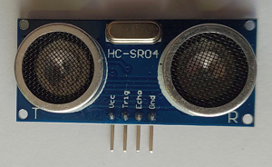This classs interfaces to an sr04 ultrasonic distance sensor.
An sr04 measures distance by outputting a short burst of utrasonic sound, and listening for an echo caused by the reflection of the sound by an object. An sr04 requires 5V power.
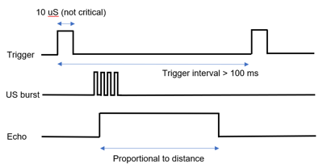A measuremment cycle starts with the micro-controller putting a short (10us) pulse on the trigger pin. This causes the sr04 to output the ultrasonic sound burst and listen to the echo. The sr04 outputs a pulse that starts with the sound burst, and ends with the receiving of the echo. The duration of this pulse is proportional to the distance.
- demo(interval: int = 500000, iterations=None)¶
sr04 demo
- read(default: Optional[int] = None) int | None¶
the distance im mm as integer
This function measures and returns the distance in mm, or the default (by default, None) specied by the caller if no valid measurement could be made.
If less than mimimum waiting interval has expired since the previous measurement, no new measurement is taken and the previous result is returned.
When the start or end of the measurement pulse is not seen within the timeout, the default value (by default: None) is returned.
The measurement and waiting for the pulse (or the timeout) is done in the function, so a function call can take up to the timout time to return.
Outputting the pulse and listening for the echo is done in the function call, so a call can take up to the timeout time to return.
- class ssd1306_base(size: xy, background: bool)¶
Bases:
canvasThis is a driver for the ssd1306 monochrome oled display driver for up to 128x64 pixels. The driver implements the sheet interface.
- Parameters
size – (
xy) horizontal and vertical size, in pixelsbackground – (bool) the default background pixel value
Oled modules with the ssd1306 chip are widely availavailable. Most have 128x64 pixels, but 128x32 and 70x40 can also be found. The 4-pin modules are i2c-only. The common 7-pin modules are spi, but can be reconfigured for i2c by resoldering some resistors.
- class commands¶
Bases:
object- set_charge_pump = None¶
- set_col_addr = None¶
- set_com_out_dir = None¶
- set_com_pin_cfg = None¶
- set_contrast = None¶
- set_disp = None¶
- set_disp_clk_div = None¶
- set_disp_offset = None¶
- set_disp_start_line = None¶
- set_entire_on = None¶
- set_mem_addr = None¶
- set_mux_ratio = None¶
- set_norm_inv = None¶
- set_page_addr = None¶
- set_precharge = None¶
- set_seg_remap = None¶
- set_vcom_desel = None¶
- write_command(cmd: int) None¶
write a command byte to the chip
- class ssd1306_i2c(size: xy, i2c: I2C, background=False, address=60)¶
Bases:
ssd1306_basessd1306 i2c monochrome oled display driver
- Parameters
size – (
xy) horizontal and vertical size, in pixelsi2c – (machine.I2C) i2c bus that connects to the chip
background – (bool) background ‘color’, default (False) is off
address – (int) 7-bit i2c slave address, default is 0x3C
This is an i2c driver for the i2c ssd1306 monochrome oled controller. This chip is used in various cheap oled displays and modules.
#$insert_image( “ssd1306-i2c”, 1, 200 )
This class implements the monochrome
canvasinterface, which provides functionality to write shapes (line,circle,rectangle,text), to derive modified canvases (inverted, mirrored, rotated, parts, combinations, etc.), and a comprehensive demo.- write_command(cmd: int) None¶
write a command byte to the chip
- Parameters
command – (int) the command byte to be send to the chip
This method writes a single command byte to the chip.
- class ssd1306_spi(size: ~godafoss.xy, spi: ~machine.SPI, data_command: [<class 'int'>, <class 'godafoss.pin_out'>, <class 'godafoss.pin_in_out'>, <class 'godafoss.pin_oc'>], chip_select: [<class 'int'>, <class 'godafoss.pin_out'>, <class 'godafoss.pin_in_out'>, <class 'godafoss.pin_oc'>], reset: [<class 'int'>, <class 'godafoss.pin_out'>, <class 'godafoss.pin_in_out'>, <class 'godafoss.pin_oc'>] = None, background=False)¶
Bases:
lcd_reset_backlight_power,lcd_spi,ssd1306_basessd1306 spi monochrome oled display driver
- Parameters
size – (
xy) horizontal and vertical size, in pixelsspi – (machine.SPI) spi bus that connects to the chip (miso not used)
data_command – ( ) dc (data/command) pin of the chip
chip_select – ( ) cs (chip select) pin of the chip
reset – (None, ) reset pin of the chip, active low; optional, the pin can be connected to Vcc (3.3V).
background – (bool) background ‘color’, default (False) is off
This is a spi driver for the ssd1306 monochrome oled controller. This chip is used in various cheap oled displays and modules.
#$insert_image( “ssd1306-spi”, 1, 200 )
This class implements the monochrome
canvasinterface, which provides functionality to write shapes (line,circle,rectangle,text), to derive modified canvases (inverted, mirrored, rotated, parts, combinations, etc.), and a comprehensive demo.
- class ssd1309_base(size: xy, background: bool)¶
Bases:
canvasssd1309 spi/i2c b/w oled display driver
- ACTIVATE_SCROLL = None¶
- ALL_PIXELS_ON = None¶
- CHARGE_PUMP = None¶
- CH_SCROLL_SETUP_LEFT = None¶
- CH_SCROLL_SETUP_RIGHT = None¶
- COLUMN_ADDRESS = None¶
- COMMAND_LOCK = None¶
- COM_OUTPUT_FLIPPED = None¶
- COM_OUTPUT_NORMAL = None¶
- COM_PINS_HW_CFG = None¶
- CONTRAST_CONTROL = None¶
- CV_SCROLL_SETUP_LEFT = None¶
- CV_SCROLL_SETUP_RIGHT = None¶
- DEACTIVATE_SCROLL = None¶
- DISPLAY_CLOCK_DIV = None¶
- DISPLAY_OFF = None¶
- DISPLAY_OFFSET = None¶
- DISPLAY_ON = None¶
- DISPLAY_START_LINE = None¶
- ENTIRE_DISPLAY_ON = None¶
- GPIO = None¶
- HIGH_CSA_IN_PAM = None¶
- INVERSION_OFF = None¶
- INVERSION_ON = None¶
- LOW_CSA_IN_PAM = None¶
- MEMORY_ADDRESSING_MODE = None¶
- MUX_RATIO = None¶
- NOP = None¶
- PAGE_ADDRESS = None¶
- PRECHARGE_PERIOD = None¶
- PSA_IN_PAM = None¶
- SCROLL_SETUP_LEFT = None¶
- SCROLL_SETUP_RIGHT = None¶
- SEGMENT_MAP_FLIPPED = None¶
- SEGMENT_MAP_REMAP = None¶
- VCOM_DESELECT_LEVEL = None¶
- VSCROLL_AREA = None¶
- class commands¶
Bases:
object- set_charge_pump = None¶
- set_col_addr = None¶
- set_com_out_dir = None¶
- set_com_pin_cfg = None¶
- set_contrast = None¶
- set_disp = None¶
- set_disp_clk_div = None¶
- set_disp_offset = None¶
- set_disp_start_line = None¶
- set_entire_on = None¶
- set_mem_addr = None¶
- set_mux_ratio = None¶
- set_norm_inv = None¶
- set_page_addr = None¶
- set_precharge = None¶
- set_seg_remap = None¶
- set_vcom_desel = None¶
- write_command(cmd: int) None¶
write a command byte to the chip
- class ssd1309_i2c(size: xy, i2c: I2C, background=False, address=60)¶
Bases:
ssd1309_basessd1306 i2c monochrome oled display driver
- Parameters
size – (
xy) horizontal and vertical size, in pixelsi2c – (machine.I2C) i2c bus that connects to the chip
background – (bool) background ‘color’, default (False) is off
address – (int) 7-bit i2c slave address, default is 0x3C
This is an i2c driver for the i2c ssd1306 monochrome oled controller. This chip is used in various cheap oled displays and modules.
#$insert_image( “ssd1306-i2c”, 1, 200 )
This class implements the monochrome
canvasinterface, which provides functionality to write shapes (line,circle,rectangle,text), to derive modified canvases (inverted, mirrored, rotated, parts, combinations, etc.), and a comprehensive demo.- write_command(cmd: int) None¶
write a command byte to the chip
- Parameters
command – (int) the command byte to be send to the chip
This method writes a single command byte to the chip.
- class ssd1309_spi(size: ~godafoss.xy, spi: ~machine.SPI, data_command: [<class 'int'>, <class 'godafoss.pin_out'>, <class 'godafoss.pin_in_out'>, <class 'godafoss.pin_oc'>], chip_select: [<class 'int'>, <class 'godafoss.pin_out'>, <class 'godafoss.pin_in_out'>, <class 'godafoss.pin_oc'>], reset: [<class 'int'>, <class 'godafoss.pin_out'>, <class 'godafoss.pin_in_out'>, <class 'godafoss.pin_oc'>] = None, background=False)¶
Bases:
lcd_reset_backlight_power,lcd_spi,ssd1309_basessd1309 spi monochrome oled display driver
- Parameters
size – (
xy) horizontal and vertical size, in pixelsspi – (machine.SPI) spi bus that connects to the chip (miso not used)
data_command – ( ) dc (data/command) pin of the chip
chip_select – ( ) cs (chip select) pin of the chip
reset – (None, ) reset pin of the chip, active low; optional, the pin can be connected to Vcc (3.3V).
background – (bool) background ‘color’, default (False) is off
This is a spi driver for the ssd1306 monochrome oled controller. This chip is used in various cheap oled displays and modules.
#$insert_image( “ssd1306-spi”, 1, 200 )
This class implements the monochrome
canvasinterface, which provides functionality to write shapes (line,circle,rectangle,text), to derive modified canvases (inverted, mirrored, rotated, parts, combinations, etc.), and a comprehensive demo.
- class st7567(size, spi, data_command: [<class 'int'>, <class 'godafoss.pin_out'>, <class 'godafoss.pin_in_out'>, <class 'godafoss.pin_oc'>], chip_select: [<class 'int'>, <class 'godafoss.pin_out'>, <class 'godafoss.pin_in_out'>, <class 'godafoss.pin_oc'>] = None, reset: [<class 'int'>, <class 'godafoss.pin_out'>, <class 'godafoss.pin_in_out'>, <class 'godafoss.pin_oc'>] = None, backlight: [<class 'int'>, <class 'godafoss.pin_out'>, <class 'godafoss.pin_in_out'>, <class 'godafoss.pin_oc'>] = None, power: [<class 'int'>, <class 'godafoss.pin_out'>, <class 'godafoss.pin_in_out'>, <class 'godafoss.pin_oc'>] = None, background=(0,0,0), invert=False, x_reverse=True, y_reverse=False, xy_swap=False, x_deadband=0, elecvolt=31, regratio=3, invX=1, invY=0, invdisp=0)¶
Bases:
canvas,lcd_spi,lcd_reset_backlight_power
- class st7735(*args, **kwargs)¶
Bases:
glcd- class cmd¶
Bases:
object- CASET = None¶
- COLMOD = None¶
- DISPOFF = None¶
- DISPON = None¶
- FRMCTR1 = None¶
- FRMCTR2 = None¶
- FRMCTR3 = None¶
- GMCTRN1 = None¶
- GMCTRP1 = None¶
- INVCTR = None¶
- INVOFF = None¶
- INVON = None¶
- MADCTL = None¶
- NOP = None¶
- NORON = None¶
- PTLAR = None¶
- PWCTR1 = None¶
- PWCTR2 = None¶
- PWCTR3 = None¶
- PWCTR4 = None¶
- PWCTR5 = None¶
- RAMRD = None¶
- RAMWR = None¶
- RASET = None¶
- RDDID = None¶
- RDDST = None¶
- RDID1 = None¶
- RDID2 = None¶
- RDID3 = None¶
- RDID4 = None¶
- SLPIN = None¶
- SLPOUT = None¶
- SWRESET = None¶
- VMCTR1 = None¶
- class st7789b(*args, **kwargs)¶
Bases:
glcd- class cmd¶
Bases:
object- CASET = None¶
- COLMOD = None¶
- DISPOFF = None¶
- DISPON = None¶
- GAMSET = None¶
- INVOFF = None¶
- INVON = None¶
- MADCTL = None¶
- NOP = None¶
- NORON = None¶
- PTLAR = None¶
- PTLON = None¶
- RAMRD = None¶
- RAMWR = None¶
- RASET = None¶
- RDDID = None¶
- RDDIM = None¶
- RDDMADCTL = None¶
- RDDPM = None¶
- RDDSDR = None¶
- RDDSEM = None¶
- RDDST = None¶
- SLPIN = None¶
- SLPOUT = None¶
- SWRESET = None¶
- TEOFF = None¶
- TEON = None¶
- VSCRDEF = None¶
- class temperature(temp: int | float, scale: int)¶
Bases:
immutablea temperature
- Parameters
temp – int | float the temperaturee, interpreted according to the scale
scale – int the scale
This class holds a temperature as a float. When constructing a temperature, or retrieveing value from a temperature object, the scale (temperature.scale.Celcius, temperature.scale.Farenheit or temperature.scale.Kelvin) must be specified.
Values (objects) of this class are immutable.
examples:
k0 = temperature( 0, temperature.scale.Kelvin ) k0.value( temperature.scale.Kelvin ) -> 0 k0.value( temperature.scale.Celcius ) -> -273.15 str( k0 ) -> "0.0K" c0 = temperature( 0, temperature.scale.Celcius ) c0.value( temperature.scale.Kelvin ) -> 273.15 c0.value( temperature.scale.Celcius ) -> 0 str( c0 ) -> "0.0C" f32 = temperature( 32, temperature.scale.Farenheit ) f32.value( temperature.scale.Celcius ) -> 0.00 str( f32 ) -> "32.0F" f212 = temperature( 212, temperature.scale.Farenheit ) f212.value( temperature.scale.Celcius ) -> 100.00
- value(scale: chr) float¶
the temperature in the specified scale
- Parameters
scale – chr the scale
- Result
float the temperature, excressed in the specified scale
The temperature is return according to the specified scale, which must be one of temperature.scale.Celcius, temperature.scale.Farenheit or temperature.scale.Kelvin.
This method returns the temperature in the requested scale.
- class terminal(size: xy)¶
Bases:
objectcharacter terminal
- Parameters
size – (
xy) horizontal and vertical size, in characters
A character terminal is a fixed size rectangular area of (ASCII) characters. The x and y coordinates are 0-origin and count to the right and down. In other words, the top-left character position is (0,0), and the bottom right character position is size - (1,1).
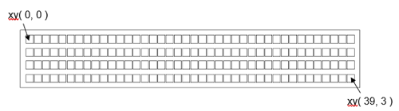A terminal has a cursor, which is the location (x y coordinates) where the write() function will put the next character (and advance x by 1).
A terminal doesn’t scroll: when the cursor is outside the visible character area (beyond the end of the line, or beyond the number of lines) any characters written will be ignored.
- The following characters are treated special:
\n puts the cursor at the first position of the next line
\r puts the cursor at the start of the current line
\v puts the cursor at the top-left position
\f puts the cursor at the top-left position and clears the terminal
\txxyy puts the cursor at the position (xx,yy). The xx and yy must be ascii numeric characters. For instance \t0501 puts the cursor at the 6th character of the second line.
- clear(c: chr = ' ') None¶
clear the terminal
This function clears the terminal by rites a space (or another character) to all positions) and puts the cursor at xy(0,0). The default implementation does this by writing spaces to all locations. A concrete implementation might provide a better (faster) way.
- cursor_set(new_cursor: xy) None¶
put the cursor (write location) at xy
- Parameters
new_cursor – (
xy) horizontal and vertical size, in characters
- write(s: str) None¶
write a string
- Parameters
s – (str) the string to be written
- write_char(c: chr) None¶
write a single character
- Parameters
c – (chr) the character to be written
- class text(text: str, font: Optional[font] = None)¶
Bases:
shape- write(sheet, offset: ~godafoss.xy = (0, 0), ink: [<class 'godafoss.color'>, <class 'bool'>, None] = True)¶
- class tm1637(n: int, slk: [<class 'int'>, <class 'godafoss.pin_out'>, <class 'godafoss.pin_in_out'>, <class 'godafoss.pin_oc'>], dio: [<class 'int'>, <class 'godafoss.pin_out'>, <class 'godafoss.pin_in_out'>, <class 'godafoss.pin_oc'>], background: bool = False, brightness=0, order=None)¶
-
tm1637 LED display and keypad interface driver
This class controls a tm1637 LED display and keypad interface chip. The mandatory constructor parameters are the number of digits, and the interface pins slk and dio. The optional parameters are the bightness (0..7, default is 0), and the order of the numerical digits.
The driver is buffered: a clear() call is required to update the display.
The tm1637 harware interface is i2c-like, but does not use a slave address byte. The driver uses an output pin for the clk (clock) pin. An open-collector is used for the dio pin, hence that pin must have a suitable pull-up resistor.
- write_digit_segments(n: int, v: int) None¶
write the segments of a single digit
- Parameters
n – int the digit that is written
v – int the seven-segment value
This method writes the 8-bit value v to the segments of digit n. The digit order (optional constructor parameter) is NOT taken into account by this method. The LSB is written to segment a, the MSB to the decimal point.
When n is outside the number of valid digits, the write_digit_segments() call has no effect.
A segments display can be buffered, so a flush() call might be required to effectuate what was written by write_digit_segments() calls.
- class tm1638(n: int, slk: [<class 'int'>, <class 'godafoss.pin_out'>, <class 'godafoss.pin_in_out'>, <class 'godafoss.pin_oc'>], dio: [<class 'int'>, <class 'godafoss.pin_out'>, <class 'godafoss.pin_in_out'>, <class 'godafoss.pin_oc'>], stb: [<class 'int'>, <class 'godafoss.pin_out'>, <class 'godafoss.pin_in_out'>, <class 'godafoss.pin_oc'>], brightness=0, digit_order=None)¶
-
tm1638 LED display and keypad interface driver
This class interfaces to the tm1638 LED display and keypad chip. The mandatory constructor parameters are the number of digits, and the interface pins slk, dio and stb. The optional parameters are the bightness (0..7, default is 0), and the order of the numerical digits.
The driver is buffered: a clear() call is required to update the display.
Multiple tm1638 chips can share slk and dio pins.
- demo() None¶
seven-segment display demo
- refresh() None¶
- write_digit_segments(n: int, v: int) None¶
write the segments of a single digit
- Parameters
n – int the digit that is written
v – int the seven-segment value
This method writes the 8-bit value v to the segments of digit n. The digit order (optional constructor parameter) is NOT taken into account by this method. The LSB is written to segment a, the MSB to the decimal point.
When n is outside the number of valid digits, the write_digit_segments() call has no effect.
A segments display can be buffered, so a flush() call might be required to effectuate what was written by write_digit_segments() calls.
- write_digit_upper(n: int, v: int) None¶
- class tm1640(size: ~godafoss.xy, sclk: [<class 'int'>, <class 'godafoss.pin_out'>, <class 'godafoss.pin_in_out'>, <class 'godafoss.pin_oc'>], din: [<class 'int'>, <class 'godafoss.pin_out'>, <class 'godafoss.pin_in_out'>, <class 'godafoss.pin_oc'>], background: bool = False, brightness: int = 0)¶
-
tm1640 LED matrix display interface driver
This class controls a tm1640 LED matrix display interface chip. The mandatory constructor parameters are the size of the display, and the interface pins sclk and dio. The optional parameters are the background (default is False == disabled) and the bightness (0..7, default is 0)
The driver is buffered: a clear() call is required to update the display.
The tm1637 hardware interface is i2c-like, but it is not meant for multiple chips as it does not use a slave address byte or ack bits. The driver uses output pins for the sclk and din pins, hence no pull-up resistors are needed.
- class tm16xx(size: xy, brightness: int)¶
Bases:
objectinterface to tm16xx chips
This class provides the interface to tm16xx LED and keypad interface chips.
- brightness(v: int) None¶
- class commands¶
Bases:
object- ADDRESS = None¶
- BRIGHTNESS = None¶
- MODE = None¶
- OFF = None¶
- READ = None¶
- enable(v: bool) None¶
- read_chip() int¶
read
This method sends a the command and optional data to the chip.
- write_command(cmd: int, data=()) None¶
send command and optional data
This method sends a the command and optional data to the chip.
- class touch(span: int, size: xy)¶
Bases:
objectlcd touch sensor interface
- demo()¶
demo: print touch adc values
- touch_adcs()¶
read and return the raw x and y touch ADC values.
- Result
int, int tuple of the 12-bit x and y ADC values of the touch point None, None when no touch
- within(a: any, low: any, high: any) bool¶
test whether a value is between two bounds
- Parameters
a – any the value to be checked
low – any the lower bound to check the value against
high – any the higher bound to check the value against
- Result
any whether a is in the trange [low..high]
This function returns whether a is between low and high. The low and high values are included in the allowed range.
Low and high must be in order: low =< high. If they are not the function will return False.
examples:
within( 9, 5, 15 ) -> True within( 15, 5, 15 ) -> True within( 4, 5, 15 ) -> False
- class ws2801(clock: [<class 'int'>, <class 'godafoss.pin_out'>, <class 'godafoss.pin_in_out'>, <class 'godafoss.pin_oc'>], data: [<class 'int'>, <class 'godafoss.pin_out'>, <class 'godafoss.pin_in_out'>, <class 'godafoss.pin_oc'>], n: int, background=(0,0,0))¶
Bases:
canvasdriver for neopixels with separate clock (ck) and data (si) lines
- flush()¶
effectuate what was written to the canvas
- Parameters
forced – bool True forces a flush, even when no pixels were written
Writes to the canvas can be buffered. If so, a flush() method call is required to effectuate the write_pixel() calls.
A flush() call might be a no-op when no pixels were changed since the previous flush() call, unless the forced parameter is True.
- class ws281x(pin: int, n: int, background=(0, 0, 0), order: str = 'RGB')¶
Bases:
neopixelsrequires neopixel support in the target, Teensy 4.1 by default doesn’t
- class xpt2046(spi: ~machine.SPI, cs: [<class 'int'>, <class 'godafoss.pin_out'>, <class 'godafoss.pin_in_out'>, <class 'godafoss.pin_oc'>], size: ~typing.Optional[~godafoss.xy] = None)¶
Bases:
touchXPT2046 touch screen chip driver
- Parameters
spi – (machine.SPI) spi bus that connects to the chip, max 10 Mhz
cs – ( ) chip select pin (active low)
size –
xythe size of the touch area in pixels
mux settling time 500 clocks??? rotate and mirror the screen offsets & calibration general touch class for this??
- class channels¶
Bases:
object- auxillary = None¶
- battery = None¶
- temperature_0 = None¶
- temperature_1 = None¶
- x = None¶
- y = None¶
- z1 = None¶
- z2 = None¶
- command_response(channel: int = 0, command: int = 0)¶
command / response exchange with the chip
- Parameters
channel – int (default 0) channel number to read
command – int (default 0) other command bits; default is single ended, 12 bits
- Result
int the 12 bit respons from the chip
This function sends a command to the chip and receives and returns the response. The most significan bit (start bit) of the command is automatically set.
- touch_adcs()¶
read and return the raw x and y touch ADC values.
- Result
int, int tuple of the 12-bit x and y ADC values of the touch point None, None when no touch
- class xy(x: int, y: int)¶
Bases:
immutablexy coordinate pair or 2d vector
- Parameters
x – int x value
y – int y value
An xy value represents a location or displacement in a 2d integer grid. Such values can for instance be used for pixel or character cooordinates within a window.
The x and y values, and the xy tuple are available as attributes.
The supported operations are addition, subtraction, negation, multiplication (by an integer), integer division (by an integer), and taking the string representation.
Values (objects) of this class are immutable.
examples:
- class xyz(x: int | float, y: int | float, z: int | float)¶
Bases:
immutablexyz 3d coordinates or vector
- Parameters
x – int | float x value
y – int | float y value
z – int | float z value
An xyz value represents a vector in a 3d space. Such values can for instance be used to represent the direction of gravity returned by an acceleration sensor.
The x, y and z values, and the xyz tuple are available as attributes.
The supported operations are addition, subtraction, negation, multiplication (by an integer or float), true division and floor division (by an integer or float), and taking the string representation.
Values (objects) of this class are immutable.
examples: